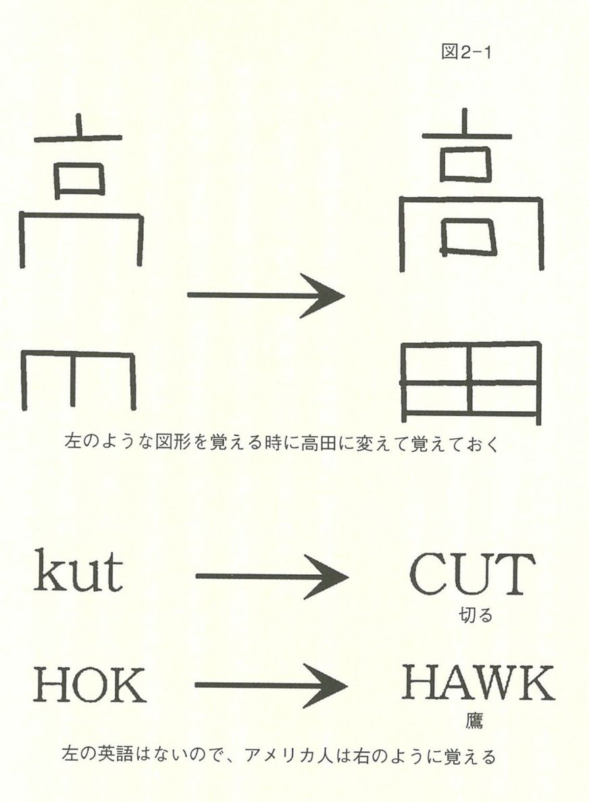
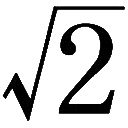
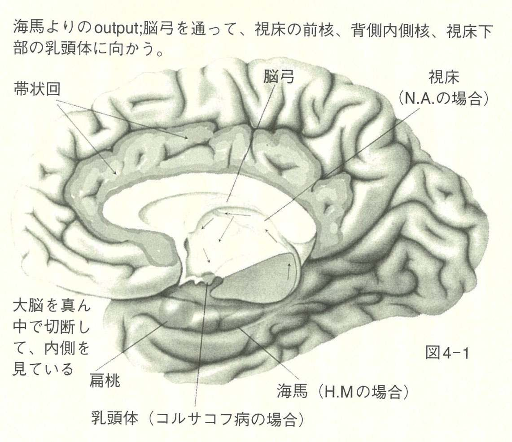
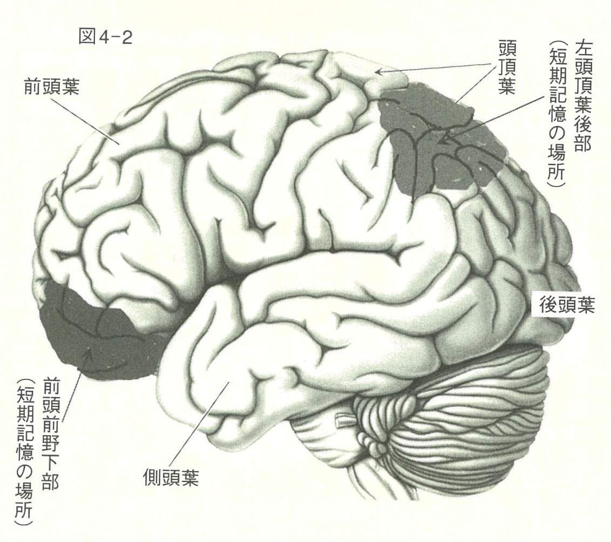
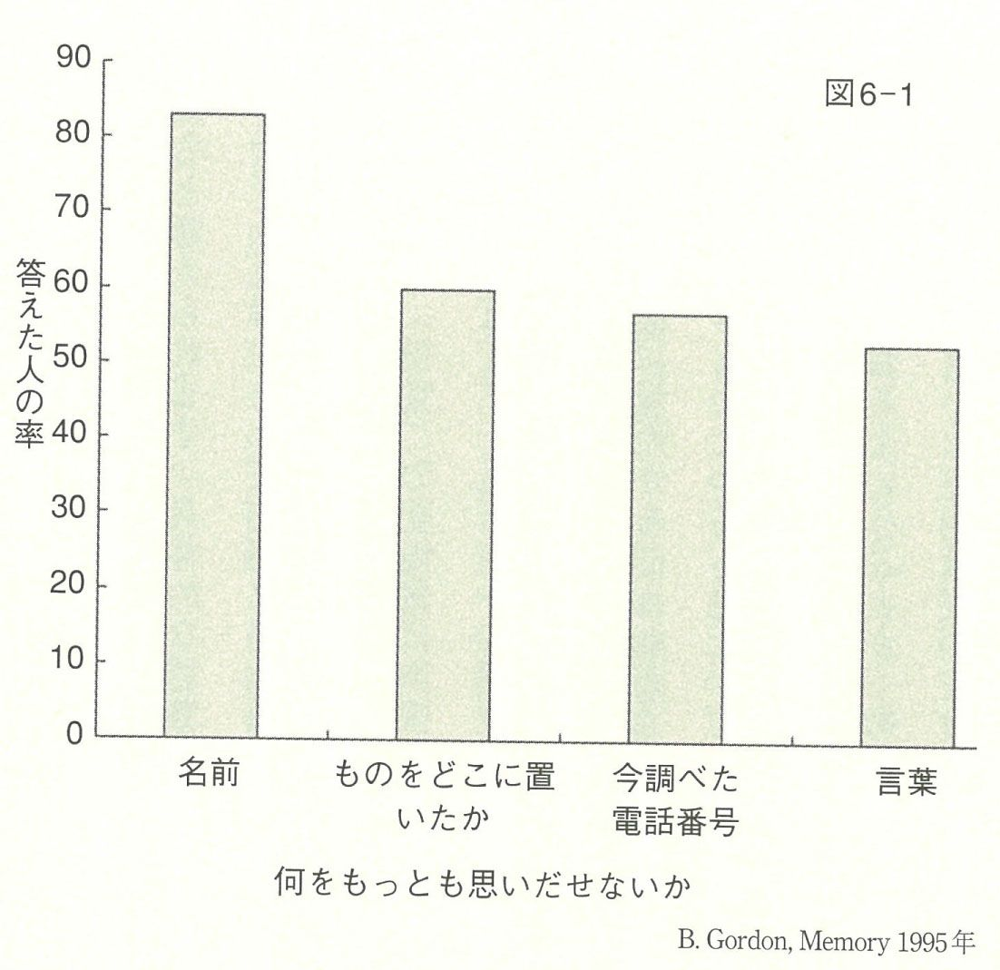
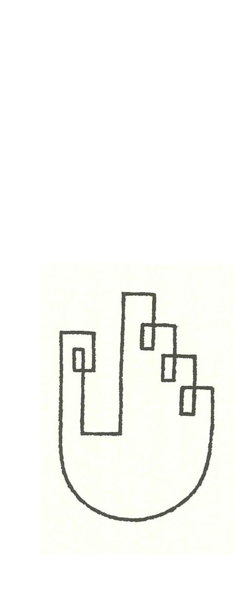
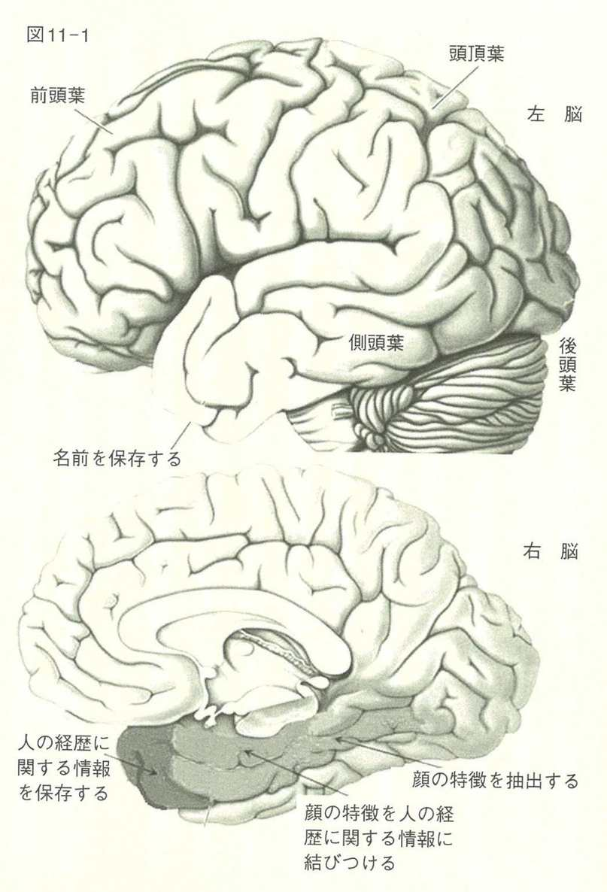
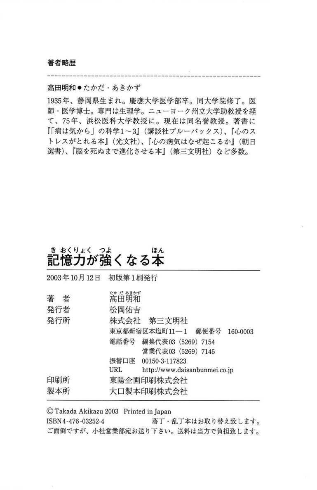

| 記憶力が強くなる本 | |
| 高田明和 | |
| (2003) | |
記憶力が強くなる本
Takada Akikazu
高田 明和
浜松医科大名誉教授
この電子書籍は、縦組みの底本を元に作成しました。
まえがき
最近、記憶に対する関心が増しています。「記憶力を強くする」という本や記憶の入り口である「海馬」という本が売れていることでも分かります。なぜでしょうか。その理由の一つは勉強の能率と効果を上げるということを目指す人が多いということでしょう。
社会が停滞し、職を得ることが難しくなると、ますますよい大学に入ったり、医学、看護などのような技術をもって生活を安定させる道に進もうという人が多くなります。また、大学の差別化が進み、一流の大学には優秀な教員と学生が集中し、競争はさらに激化していくでしょう。
わが国の学校教育の現場では、なぜか数学や物理ができる人は、頭が良くて、歴史などのいわゆる暗記物はだれでもできる教科で、頭の良し悪しとあまり関係がないような評価をされる傾向があります。ところが、年齢とともに記憶力のウエートは高まっていき、記憶が良いことは頭が良いこととほとんど同義のようになってきます。
今では、受験の指導者はすべての学科は記憶により点数が上がると主張しています。数学も理科も問題の解き方を記憶するのだと教えるのです。このために記憶はどのように訓練できるのか、記憶力を高めるにはどうしたらよいのかにますます関心が集まるのです。
実社会で活躍する営業マンなどの場合、顧客の名前や住所などの個人情報を覚えることは成功の道を約束するように思えます。それだけではありません。会議などでいろいろな数字や名前を正確に列記できる人は〝非常に頭の良い人〟という印象を与え、競争から抜け出す可能性を与えます。そうなるとまだまだ記憶力を高める方法はあるのだろうかという関心が高まるのは当然です。
さらに高齢者になれば、だれでも長生きを望むのは当然ですが、同時にぼけてはたまらない、ぼけを防ぐことはできるだろうかという気持ちを強くもっています。ぼけというのは考える力も衰えますが、何と言っても昨日のこと、最近会った人の名前、場所などを忘れるというのがその大きな症状でしょう。
こうなるとちょっとした物忘れが起きても、これはぼけのはじまりではないかと恐怖心を持ちます。あるいは周囲にぼけ始めた人がいて、その光景を目の当たりにすれば、そうなりたくないと思うのも当然です。そうなるとなんとかこれを防ぐ方法はないかと思うようになります。
どの世代にとっても今や記憶は大きな関心事であり、記憶をよくする方法、衰えさせない方法はないかと探すようになっています。
この本は記憶についての最新の知識をお伝えするとともに、実際に記憶力を高めるにはどうしたらよいかをお示しする実践的な記憶改善術の本です。「何かを思い出せない。記憶が衰えた」と言う人に「それはこれこれでしょう」と言ってあげると「そうだ、その通りだ」と言います。つまり覚えられない、記憶が悪くなったのではなく、記憶を取り出せないのです。それをどうするかがこの本には書いてあります。
また記憶術の達人はどのような方法を用いて記憶しているか、その脳の仕組みは何かということについても述べています。ですから単に記憶の仕組みについて述べた本ではなく、脳の仕組みから実際に記憶をよくする方法を示した本なのです。
この本が若い受験競争のまっただ中の人たち、企業戦士として毎日戦いの中に生きている中高年の人たち、晩年を幸せに充実して生きていきたいと願う高齢者の方々にも記憶に関する知識と記憶をよくする方法について何か参考になる情報を与えることができれば、作者として無上の幸福と思います。
平成十五年七月
高田明和
目 次
装幀・デザイン＝熊澤正人／尾形 忍
装画・扉イラスト＝宮田 晃
第１章 記憶についての常識のウソとマコト
もともと記憶力の悪い脳はない
この人、顔はよく知ってるんだけどなんていう名前だっけ、ということはだれにでもよくあります。相手は親しげに私の名前を呼んでいるのに、相手の名前が出てこなくて、まずいなあ、ああ名前は何だったかなあ、という経験も一度や二度ではないでしょう。さらには、いつも会ってる仲のいい友達なんだけど、他人に紹介しようとしたら、名前をど忘れ。友達に軽蔑の目で見られたなんてことありませんか。こういうことが度重なると、記憶力に自信がなくなり急に老いを感じたりするのです。
年配の人間だけではありません。あいつは何であんなにたくさん歌の歌詞を覚えているんだろう、と思ったことありませんか。同じように勉強してるのに、この範囲だけはどうもよく覚えられないんだよなあ、ということはありませんか。そして、あんなに頑張って徹夜で勉強したのに、試験が終わったとたん、ほとんど忘れてしまった、という経験ならだれでも身に覚えがあるでしょう。
どんなものにも個人差はありますから、記憶力にも個人差はあります。ただ、漠然とわたしは記憶力が落ちたとか、どうせわたしは記憶力が悪いから、と思っている人にはこの本で伝えたいことがあります。
記憶力を高める方法はあります。記憶が悪くなったと嘆く前に試してみることがあります。なぜなら、もともと記憶力の悪い脳というのはないからです。記憶力に関して特別に性能が悪い脳というのは医学的にはありえないのです。
記憶術はひとつの技術です。もしあなたが何かの技術、たとえば、碁や将棋に上達しようと思うなら、うまい人に教わったり、本を読んだりして、技術の向上を目指すでしょう。これと同じで、記憶の原理を学び、それを応用する努力をすれば記憶力は上がります。
記憶をよくしようと努力しない人の記憶はよくなりません。つまり、年だからとか、もともと頭が悪いからといってあきらめている人の記憶力は落ちていきます。実際、中高年の人でも、何かの技術を学ぶために学校などに行っている人は、記憶術による進歩が早いのです。また本を読んだり、勉強する習慣のある人も、記憶術の習得は早いことが知られています。
「記憶が悪い」のではなく「記憶の仕方が悪い」
「自分は記憶が悪くて......」と言う人は、あなたの周囲にも多いことでしょう。いや、この本を読もうとしているあなたこそ、そう思っている張本人かもしれません。
この意見の根底にある考え方は、記憶をちょうど〝物〟のように考えているということです。〝物〟のようなという意味は、たとえば「自分は筋肉が弱いから走るのが苦手だ」とか、「目が悪いからよく見えない」といったことと同じです。記憶が悪いということを、〝白内障の目〟を持ったひとの視力と同じように考えているのです。
記憶というのは脳の構造ではなく、働きまたは過程なのです。脳のどこにも記憶が蓄えられている胃袋のようなものはありません。
記憶に関係する脳の部位はいろいろで、しかもそれは相互に関係づけられています。この相互の働きが記憶を作っているのです。ですから「記憶がよくない」というのは記憶を溜めこんでいる胃袋が故障しているということではないのです。
筋肉を例にとりますと、記憶が悪いということは、弱い、力のない筋肉の持ち主だというのではなく、筋肉をうまく使うことができないということなのです。たとえば、脳梗塞で脳からの指令がいかない筋肉は、いかに隆々としていても動きません。一方、脳からの指令に的確に応ずることができる筋肉は、バーベルを上げることもできるし、ピアノを弾くこともできるのです。
記憶の仕方の技術が記憶の良し悪しを決める
記憶の良し悪しは、記憶の仕方の技術をもっているかどうかに大きく左右されます。記憶の技術は、意識的に勉強したものとはかぎりません。無意識に、周囲の人（親や友人など）の覚え方を真似している場合もあるし、自分で工夫した場合もあるでしょう。
これは、バイオリンの上達の方法を編みだした〝鈴木メソッド〟を考えるとよく分かります。鈴木さんは、だれでもしゃべれるという事実に驚きを見いだし、それなら、だれでもバイオリンを弾けるはずだと考え、独特のバイオリン練習法を編みだしました。それは言葉は早いときから学ぶから話せるのだ、だからバイオリンも幼児から始めれば上達するはずだという理論です。実際この方法により、ほとんどだれでもバイオリンが弾けるようになり、世界を驚かせました。
しかし、同時に注意しなければならないことは、この方法でだれでもイザーク・パールマンのような天才的なバイオリニストになれるというわけではないということです。それには生まれつきの才能も必要でしょう。
同じように記憶についても、人によって能力の差はあると思います。しかし、私たちに必要なのは、天才的な記憶の能力ではないのです。
たとえば、生まれつき特別なバイオリン演奏の才能のある人も、練習する機会がなければバイオリンはうまく弾けません。ところが普通の才能の人も、鈴木メソッドを使えばかなりの曲が弾けて、自分で音楽を楽しんだり、他人と合奏したり、何かのパーティーで弾いたりして人を驚かすことができるのです。
別な例をあげましょう。あなたの周りに、一メートル四方の箱と五十センチ四方の箱があるとしましょう。一メートル四方の箱にあなたがいろいろな書類を乱雑に投げ込んだとします。一方、小さいほうの箱には、名札と番号をつけた書類を入れたり、小さなファイルを使ってその中に入れ、さらにそれに名札をつけたりしておくとします。
おそらく、あなたは小さい箱からは必要な書類をかんたんに取りだせるでしょう。しかし、乱雑になっている大きい箱から必要なものを取りだすには、非常に多くの時間がかかってしまうはずです。
記憶の良し悪しは、あなたが何を記憶するかにもよります。本に興味のある人は本の内容をかんたんに記憶するでしょうし、子供のころの楽しい思い出は楽に、いつでも思いだせます。しかし、単調な授業の内容を思いだすのは大変です。
ですから普通の場合、記憶が悪いというのは記憶の仕方の技術を身につけていないだけだ、ということなのです。
年をとるとすべての記憶は衰えるのか
高齢者の記憶については、多くの研究がなされています。たしかに年齢とともに記憶は悪くなり、覚えたり、思いだしたりすることが若いときのようにはいかないことも事実です。しかし、年をとると何もかも衰えるのか、というとけっしてそんなことはありません。
（１）どの年代と比較するのか
高齢者という定義はだいたい六十歳代の後半からの人を意味します。高齢者の記憶力の研究では二十歳代ぐらいの人と比較することがふつうです。四十、五十歳代の人の記憶力と比較しているものはあまりありません。
たしかに私たちは十代、二十代のときには、聞いたことを忘れないとかすぐに覚えられるという経験があります。そのため二十代のころに比べて今はいかにも記憶が衰えていると感じるのです。ともするとわたしたちは、一番絶頂期を基準にしてものをはかるくせがあります。中高年になって、十代のころ一晩で分厚い歴史の教科書を暗記したような記憶力と比較する必要はないのです。しかし四十、五十代に比べてはどうでしょう。
たとえば私の場合、むしろ最近のほうが記憶がよくなったと思うことがかなりあります。それは年をとると昔ほど小さなことにこだわらなくなり、くよくよ考えて精神が統一されないということがなくなること、さらに仕事がうまくいくようになると自信が増し、これが記憶をよくすること、悩みや不安を克服する方法を覚えているので、ストレスにあってもあまり動揺しなくなり、心が乱されなくなっていることなどが原因と思われます。さらに最近、この本にも書いているように〝高田式〟ともいえる記憶術を編みだして、これを使っているからです。
（２）どんな記憶が衰えるのか
すべての記憶力が同じように衰えていくわけではありません。見たものとか場所の記憶は衰えますが、一般の理解とは逆に、数、名前、物語の記憶は、四十歳代の人とあまり変わりません。
（３）年をとって良くなるもの
年をとって経験を積むと、知的活動力が若いときより増します。そのために、経験を必要とする記憶は増していきます。たとえば、知り合いの名前を覚えている数は、若いときより多いのです。ちょうど年賀状の数が年とともに増すようなものです。
（４）心理的な要因が記憶力に影響する
年齢とともに記憶が衰えるといわれる理由は、記憶そのものの能力が衰えたのではなく、心理的な理由によることがかなりあります。たとえば、やる気、気が散る、怠け癖、興味のなさ、うつ状態、健康が侵されている、不安などの要因が記憶力に大きく影響するのです。
「思いだせない」ということは「忘れた」ということではない
さてここでいくつか、注意したいことを指摘しておきましょう。
まず「記憶は筋力と同じで使えば使うほどよくなる」ということです。実際、知能の力は使わなければ衰えます。また使えばすべての能力は衰えを最小限にできます。しかしもっとも重要なことは、記憶をよくする技術を学ばないと記憶が非常によくなることはないということです。
記憶の方法を覚えるというのは、覚えていなくてはならないことを覚えるということです。何でも覚える、思いだすということではありません。だれでも顔を見て名前が浮かばないことがよくあります。このときに思いだす手助けをするのが記憶術です。ですから、思いだせないということは忘れたということではないのです。思いだす技術を使えば思いだせるということです。
わたしたちはときどきあまり覚えることが多すぎて、とても覚えられない、と思うことがあります。事実、あることを覚えると次の新しい記憶の邪魔をすることがあります。しかしこれは脳の容量が一定で、その容量を超えた量の記憶はできないということではないのです。
たとえば、「前行性抑制」という現象があります。これは前に学んだことが、次に学ぶことを邪魔するという現象です。しかしこれは、脳が満杯になったということとは違うのです。記憶の邪魔をするのは、記憶したことの量ではなく、秩序だって蓄えていないということなのです。実際、異常に記憶のよい人の例を見ると、私たちの記憶の容量には、限度はないともいえるのです。
本当に脳は10％しか働いていないのか
「私たちは脳の能力の10％しか使っていない」という話を聞いた人は多いと思います。この話は記憶力を増そうとする人、いや能力アップを図ろうとする人には励ましになるでしょう。しかし、いままでこのようなことを研究し、その証拠を示した人はいません。
私たちの脳の細胞の活動を外から見ることができます。それは、ＰＥＴ（陽電子断層撮影法）とかＭＲＩ（機能的磁気共鳴）という方法です。これを使うと、脳のあらゆるところが活動していることが分かります。つまり、脳細胞はいつも活動しているのです。
さらに最近の研究では、脳細胞の働きは使わないとどんどん悪くなるということが示されています。脳細胞は長い突起をもち、これがいろいろな細胞とつながり、情報のやりとりをしています。このつながりの場所を、シナプスといいます。シナプスを通る刺激が多くなると、突起は枝分かれして、シナプスの数が多くなります。一方、神経を通る情報が少なくなると、シナプスは少なくなり、突起は次第に萎縮していくのです。
このことが意味することは、脳は10％しか働かず、90％の細胞は何もしていないというのでなく、働いているのですが、情報のやりとりが意味のあるものではないのだ、ということなのです。
ですから、もっとも大事なことは、脳を正しく、ある目的にそったような働きをさせるようにすること、それには、その目的にそうような技術を使う必要があるのです。記憶についても同じです。記憶したいと思っているときに別のことが気になっていれば、何も覚えられないし、手がかりも方法もなくてあきらめてしまえば何も思いだすことはできません。
脳をもっとも効率よく使うには、（１）ある目的のために精神を集中し、心を乱さないこと、（２）その目的に必要な技術はなんでも使うこと、（３）その技術を高める訓練をすること──これらが必要なことです。
ですから、この本では記憶にかぎって、それをよくするには何が大事か、どのような技術が必要か、さらに、その技術を増すにはどのようにすればよいかを述べましょう。なるべく具体的にお話しするつもりですが、少しむずかしい脳の仕組みについても触れておく必要があります。それによって、わたしが話すことには医学的根拠があると分かってもらえると思うからです。
この章の最後に確認しておきたいのは、記憶をよくする、つまり、ものを覚え、思いだすことができるようにすることは、人生をよりよく生きる方法のひとつ、つまりよく生きるための手段だ、ということです。問題は、何にどうその記憶を使うかということです。それはちょうど、パソコンの技術と同じです。パソコンができることは素晴らしいのですが、それを何に使うのか、何のために使うのかがはっきりしてこそ意味があることなのです。
記憶の訓練は人生の目的、それに向かう意欲、関心などと無関係ではありません。人生を豊かにする一助としてこれから述べる記憶の技術が役立てば、これほど素晴らしいことはありません。
第２章 記憶力アップ◆基本５原則
記憶力を上げるためには基本となる原理・原則があります。この原理・原則は一般的なものなので、ほとんどすべての記憶術に応用できます。それは、【１】意味をもたせる、【２】組織化する、【３】関連づける、【４】視覚化する、【５】注意を向ける──この五つです。まずこれから始めましょう。
【１】意味をもたせる──意味があると覚えやすい
学習が楽になる要素のひとつは、学ぶことが何か意味をもつということです。意味のないことを覚えるのは非常に困難です。また、覚えることに意味があればあるほど、覚えるのが楽になります。その反対にあるものが丸暗記です。丸暗記はだれでもご存じのように繰り返し、繰り返しで、意味があってもなくても覚えてしまうというやり方です。
文章は意味のない単語の組み合わせより、意味があったほうが覚えやすいでしょう。たとえば「私は覚えます」という文章のほうが「覚まえ私すは」よりはるかに覚えやすいと思います。また具体的な名詞は、抽象的な名詞より覚えやすいことはだれでも実感できることです。
また記憶術にたけた人は、意味のない形を意味のある漢字に直して覚えます。これは地図にも図形にも応用できます。これを図２─１に示してみましょう。
ある形が私の名前に似ているときには、私の名前、高田に変えて覚えておきます。とくに意味のない形に、意味をつけてしまうのです。
この「意味を持たせる」という原理には、次のようなものがあります。

（１）身近に感じる
一般に、あることについて知れば知るほど、その情報は覚えやすくなります。外国語を学ぶときでも、その国のこと、その国の音楽、文学などを知れば、その国の言葉をますます覚えようとするし、覚えやすくなるのはだれでも経験することでしょう。つまり、学習は学習の上に築かれるのです。あなたがあることを知れば、そのことをめぐる情報はあなたに親しみを感じさせます。
たとえばドイツ語です。ドイツ語には英語にない多くの特徴があります。まず、名詞に「性」があります。それにより冠詞が異なります。また英語ではｎで終わる言葉は多くありませんが、ドイツ語では多くの動詞はｎで終わります。そこで、最初にドイツ語の文章を見ると奇異な感じをもつでしょう。しかしちょっと勉強を始めれば、少しも変ではなくなります。つまり言語が身近に感じられるのです。
また、ドイツのある出来事を知ると、あなたはそれをさらに別の出来事と結びつけて理解し、記憶できます。音楽の好きな人は、モーツァルトが一七九一年に亡くなったことを知ります。すると、そのころにフランス革命が起きていたという事実と結びつけることができます。そうすると、ドイツがますます身近になり、さまざまな情報がつながって強い記憶として残ります。
何人かの男性と女性に、スポーツの言葉のリストと料理の言葉のリストを示してその言葉を覚えさせる、という実験をしました。すると男性はスポーツの言葉のほうをより多く覚え、思いだすのですが、女性は料理の言葉を多く覚え、思いだします。それは男性はスポーツのほうにより関心があり、女性は料理のほうに関心があるからです。
同じように、歴史的な出来事でも、高齢者は若者と違った時代のことを記憶し、思いだすことができます。たとえば、戦後すぐの事件については、そのころちょうど二十歳くらいの人には非常に覚えやすい出来事になります。一方、その時代には生まれておらず、興味もない若者にとっては覚えにくい事件になるのです。高齢者は戦後の光景、町並み、食べ物などをよく知っているので、たとえ事件について何も知らず、はじめて聞いたとしても、非常に親近感のある出来事として捉えることができます。一方、若者にとって戦後すぐといっても感覚的には江戸時代とあまり変わらない遠い昔の話と受けとられ、事件を結びつける体験もまったくないので、丸暗記以外に覚える方法はないのです。
（２）語呂合わせで意味をつくる
「２２＝４」を、日本では「ニ、ニンガ、シ」のように区切りのよい歌のように覚えさせます。アメリカでは「ツーバイツー イズ イコール フォー（two by two is equal four）」というように、長い文章で覚えるしかありません。短い言葉でリズミカルに覚えられる日本の九九のほうが、暗記しやすいことは容易に想像できます。
欧米では韻を踏んで覚えやすくすることが多いのですが、日本語でそれにかわるものは語呂合わせです。たとえば、は「ヒトヨ、ヒトヨニ、ヒトミゴロ（一夜、一夜に、人見ごろ）」と覚えるのは、よくご存じでしょう。
また医学では、脳神経を覚えることが絶対に必要です。脳神経は十二本あって、脳幹から外に出ています（嗅神経や視神経のように脳に入るだけのものもある）。これに１から12まで番号がついています。人によっては第８神経（Ⅷ）などというので、番号と組み合わせて覚えることが絶対に大事です。ところが、12もあるので丸暗記は非常に困難です。そこで、昔の人が歌を作ってくれたのです。
まず神経を１から並べてみます。嗅神経（Ⅰ神経）、視神経（Ⅱ）、動眼神経（Ⅲ）、滑車神経（Ⅳ）、三叉神経（Ⅴ）、外旋神経（Ⅵ）、顔面神経（Ⅶ）、聴神経（Ⅷ）、舌咽神経（Ⅸ）、迷走神経（Ⅹ）、副神経（11）、舌下神経（12）です。
これを、嗅いで（嗅神経）、見る（視神経）、動く（動眼神経）、車の（滑車神経）、みつ（三叉神経）、の外（外旋神経）、顔（顔面神経）、聞く（聴神経）、舌は（舌咽神経）、迷う（迷走神経）、副（ふく・副神経）、舌（ぜつ・舌下神経）と教えられます。
これを知らなければとても覚えられないでしょう。
また歴史で、鎌倉幕府の成立の年号一一九二年を、「いいくに（一一九二）造ろう鎌倉幕府」と覚えた方も多いでしょう。
とくに効果的なのは、数を語呂合わせで覚える方法です。たとえば、私は二カ所に家があります。郵便番号は二つあることになります。また電話も東京に二本、静岡県のある場所に二本あります。そのおのおのにファクスがあります。さらに静岡県のある場所の住所の最後に番地があります。これをどのように覚えるかは大変です。
そこで、私がどのように語呂を合わせているかをお示しします。
静岡の郵便番号 ４１９─０１０６（良い工夫、老いのおむつ）
東京のファクス番号 ３８２９─１８４７（さば肉嫌よな）
東京の電話番号１ ３８２９─１８４９（さば肉嫌よく）
東京の電話番号２ ３８２９─３８１６（さば肉、さば色）
静岡の電話番号１ ０５５─９７４─１９０８（クナシリ行く親）
静岡の電話番号２ ０５５─９７４─１９１６（クナシリ行く色）
静岡のファクス番号 ０５５─９７４─１９３６（右の１を３にしたと覚える）
静岡の番地 ３５─４０３（産後の予算。医学部にいて予算に苦労したので）
このように覚えると覚えやすいので、いろいろな数字に語呂を合わせています。
（３）パターンを見つける
数でも何でも、そこに潜んでいるパターンを見つけると記憶が容易になります。まず例をあげましょう。
「５８１２１５１９２２２６２９３３３６４０４３４７」という数字を覚えなさいと言われたらどうしますか。私はまず語呂を合わせてみました。それは「今夜十二時、囲碁行く、爺任務、憎さみ寒し、お呼びよな」です。意味があるようなないような語呂ですが、なんとか覚えられるでしょう。
ところが、この数にはパターンがあるのです。まず５から始まるのですが、５に３を足すと８になります。これに４を足すと12です。これに３を足すと15で、さらに４を足すと19です。これを最後まで続けるのです。規則が分かりましたか。
欧米では語呂がないので、このような規則を無理に作り覚えるのです。しかし、例外の多い規則を見つけても覚えておくのが難しいので、日本の語呂がいかに使いやすいか身にしみて感じます。
【２】組織化する──順序立てる、グループ分けする
もし辞書に、単語がランダムに記載されていたらどうでしょうか。まったく使い物にならないでしょう。辞書を使える理由のひとつは、言葉がアルファベット順に並んでいるからです。また図書館で本を見つけたり、キャビネットの中から書類を取りだしたりすることができるのは、本や書類が順序よく並んでいるからです。同じように、ものごとが長期記憶に順序よく、組織化されて蓄えられていれば、あなたは何かを思いだすために、記憶のすべてを探る必要はないのです。
たとえば、日本の都道府県の名前をあげなさいという質問をされたときに、あなたはどうしますか。おそらく地図を描いて、南の沖縄県、鹿児島県と上がってくるでしょうか。また、北海道から青森県などと下がってくるでしょうか。
ここで大事なことは、名前が何かの規則にしたがっていれば、思いだしやすいということです。
同じことは名前についても言えます。もし姓が山で始まる名前を探すとすると、あなたはどのようにしますか。山本、山田、と比較的あなたの近くにいる人の名前から始めるでしょうか。あるいは山がつく有名人を思い浮かべるでしょうか。さらに最初かんたんに思いだせた名前が尽きてしまい、さらに思いだそうというときにはどうしますか、おそらく山の下の字をアイウエオ順に探すでしょう。
じつはこのことは、記憶術として非常に大事なことを示しています。私たちがある人の顔を見て名前を思いだそうとする、またはある事件、出来事を人に説明するために何かを思いだす場合に、ある順序でそれを探します。
もっとも見いだしやすい順序は、アイウエオ順でしょう。アイウエオ順に探して見つかるためには、覚えるときにアイウエオ順に入れるつもりになる、つまり「これはワに入る」と自分に言い聞かせる必要があるのです。別にそうしなくても、自動的に記憶するものはどこかのファイルに入れられるのですが、アイウエオ順のファイルがもっとも見いだしやすいので、ここにしっかり入れてやる必要があるのです。
次に大事な組織化は、いろいろなものを似たものにグループ分けすることです。研究の結果、情報をグループに分けて覚えることは、記憶や学習を助けることが分かっています。たとえば、人、バラ、イヌ、椿、女性、馬、子供、ネコ、チューリップ、という名詞を覚えようとします。そのときに、人、女性、子供を人間としてグループ化し、バラ、椿、チューリップをグループ化、イヌ、馬、ネコをグループ化すれば、覚えやすいことはすぐに分かると思います。
並んでいるものは、最初と最後が覚えやすい
さて、ものを順番に並べると覚えやすいのですが、この順番の位置も、覚えやすさに関係します。これを「連続効果」といいます。とくに多くの順番の場合に、最初のいくつかと最後のいくつかは覚えやすく、真ん中は覚えにくい、または、思いだしにくいことが知られています。
日本の首相の場合に、初代の伊藤博文は知っているし、最近の小泉、その前の森という名前は出てきますが、その途中はほとんど無理でしょう。また昔のクラスの仲間を思いだすときに左端、右端に座っていたＡ君、Ｂ君は思いだせても、真ん中あたりの人はごちゃごちゃになります。このように、ある順番で与えられた言葉などを覚えようとするときに、最初と最後は覚えていても、真ん中が覚えられないというのが普通です。
この連続効果ですが、学習と記憶の間隔にも影響されます。たとえば十の単語を覚えるように言われ、その後すぐに想起させられる場合ですと最後のほうの言葉がよく思いだされます。ところが、時間がたつと最初のほうの言葉を思いだすほうが容易になります。
連続効果を利用して記憶を高めるには二つの方法があります。まず順序を変えて、真ん中にある言葉を覚えるのに時間をかけるのです。そして、最後に最初から覚えようとします。
覚えにくい言葉を最初か最後にもってくるように順番を変えるのも、ひとつの方法です。
【３】関連づける──よく知っていることと結びつける
あなたはイタリアの形を描くことができますか、ではギリシャはどうですか。おそらくだれでもイタリアの形を描くほうがかんたんでしょう。それはイタリアが長靴の形をしているし、それを多くの人が覚えているからです。関連とは、覚えようとすることをすでに知っていることに結びつけることです。
これも記憶術の重要な方法です。何かを別のことに結びつけるのです。とくに、自分に関連したことに結びつけることが有効です。ある記憶の達人は故郷の道を歩いていることを思いだしながら、そこに覚えるものをすべて結びつけていたのです。
だれでも、たしかに覚えていると知っていても思いだせない、想起できない場合があります。このときに「周囲のことを考える」という技術が役に立ちます。何かを思いだそうとするときに、それに関連する状況を思いだし、結果的に、そのことを思いだそうとするのです。
たとえば、あなたが昔習った先生の名前を思いだそうとするとします。あなたはその先生が教えてくれたときの教室を思いだし、そのときに自分の周囲にいた人を思いだし、先生の声を思いだします。すると、ふっとその先生の名前が浮かぶのです。
この方法は、けっして新しいものではありません。今から百五十年くらい前に、英国の哲学者のジェームス・ミルにより案出されたものです。これはちょうど何かを思いだそうとするときに、家のどこかに物をおいていたのにどこか思いだせない、それを思いだそうとする場合に似ています。まず最初に、家のいろいろな場所をまわり、可能な場所を探します。そして次第に目的の物を見つけようとするでしょう。これと同じように、関連することを思いだして、次第に本当に見つけようとするものに到着するというのが「周囲のことを考える」という方法なのです。
【４】視覚化する──言葉をイメージ化して覚える
あなたの家から駅に行く道は、何本ありますか。この問いに答えるために、あなたは自分の家の周囲の道を思い浮かべるでしょう。そして駅までのまっすぐな道、曲がった道、その間をつなぐ道などを、順番に思いだすことでしょう。これはそんなに難しくないのですが、このことは、記憶にイメージがどんなに大切かを示しています。
イメージを記憶に使うと効果的だという研究は一八〇〇年代から始まっています。とくに最近、このことへの関心が強く、なんと〝Journal of Mental Imagery〟という雑誌まで、一九七〇年代の後半に創刊されました。
イメージが言葉を覚えるうえでも重要だということも知られています。言葉をイメージするというのは、言葉そのものでなく、リンゴならリンゴの形、味、産地などをイメージし、リンゴという言葉を覚えたり、思いだしたりするということです。
言葉をイメージするという方法は、記憶術の重要な方法です。たとえば、言葉の組み合わせのテストで、「犬・山」や「戸・子供」という組み合わせを覚えさせようとします。このときに「犬につれられて近くの山に登った」とか「子供がドアを開けようとしている」というように、イメージして覚える方法が効果的だということは認められています。
【５】注意を向ける──覚えることに注意と関心を払う
私たちには思いだせないことも多くありますが、その理由のひとつに、関心がないため注意を払っていなかった、ということがあります。私たちは何かを「忘れた」と言いますが、そもそもそれを覚えなかったということがあるのです。
たとえば、次の質問に答えられますか。
信号の一番右の色はなんですか。
十円硬貨の表には絵がありますか。
裏には絵がありますか。
いつも見ていたり、手にとって使っていても、関心がなければ覚えないし、思いだせないということがよく分かると思います。とくに、年をとって物忘れが多いと嘆く方に話を聞くと、約束した電話をかけることを忘れた、メガネをどこにおいたか忘れた、約束の日時をメモすることを忘れた、と言います。
しかしこの人たちに特徴的なことは、非常に多忙だということです。電話をいっぱいかけたり、かけられたりしていて、つい約束した電話をかけることを忘れる、という場合も多いのです。また人と話をしながら、メガネをどこかにおいてしまい、見つけるのに時間がかかったという場合もよくあります。
つまり、年をとってから非常に多忙になったり、やることが多くて、ひとつのことに気を留めていられないという状態になっています。このような人が「昔はこんなことはなかった」「若いころは電話のかけ忘れなどはなかった」などと言いますが、昔はそれほど忙しくなかったということも忘れてはいけません。
人は何かをやっているときには、そのことにのみ注意を払っているのです。こう言うと、「自分は二つのことに注意を払っている」と言われるかもしれません。たとえば、新聞を読みながらテレビを見るとか、会議でいろいろな人が話していることをほとんど理解できる、だから皆の話を聞いているのだ、と言う人もいると思います。
しかし研究によりますと、じつは二つ以上のことをやっているときには、おのおの交互に注意を払っているのだということが示されています。これはちょうど、リモコンでテレビを見ているようなものです。あるチャンネルを見ていて、別のチャンネルに替えるということを繰り返すと、両方のテレビの内容を理解できることがあります。両方ともスポーツの場合などは、一方のテレビが映している野球の点差と、もう一方のテレビが報道しているゴルフのスコアなどは、両方とも覚えていられるでしょう。しかしこれは、同時に二つを見ているというわけではないのです。
そこで、物忘れに戻るのですが、私たちは多くのことに注意を払うようになると、当然、注意を払わないことが起こります。それを無意識にやるようになるので、覚えていないということが起こるのです。メガネを無意識にどこかにおいたなどというのがよい例です。
ですから、覚えるためにはそのことに注意と関心をもつ、ということが非常に大事になるのです。
第３章 記憶力アップ◆応用５原則
記憶をよくする原理・原則について、さらに続けましょう。ここでは「繰り返し」「リラックス」「文脈」「興味」「フィードバック」について説明します。
【１】繰り返し──覚えた後でさらに「繰り返す」のがコツ
だれでも記憶するためには、「繰り返し」が必要だということを知っています。短い文章やいくつかの単語の記憶の場合には、繰り返さなくてもすぐに覚えられることがあると思います。しかし、覚える単語の数が多くなったり、長い文章を覚える必要があるような場合には、繰り返しがどうしても必要になります。
繰り返しは覚えるために必要な技術ですが、それで十分とは言えません。たとえば、前に述べた信号の色なども、いつも見ているのに注意を払っていないので覚えていないのです。
興味深いことに、自動的といえるくらい繰り返している言葉でも、どうしても思いだせないことがあります。
般若心経という短いお経があります。仏教では非常にポピュラーなお経といってよいでしょう。そのためさまざまな宗派でこのお経が唱えられます。信者も毎日これを唱えているので、自動的に言葉が口から出てくるほどです。ではこれを書いてみなさいと言われると、口ずさみながらでないと書けないのです。途中になると、書いては最初から唱え、あるところまできて、その経文を書くのですが、さらに次ということになると最初から唱えて、その場所までこないと書けないという人が多くいます。
お経のように丸暗記している文章は、いわば脳を素通りして口から出てくるので、厳密に言えば記憶されているとはいえないのです。繰り返しには注意力も必要ですし、繰り返す内容を理解することも必要です。お経の場合には内容が理解されていないので、なおさら今述べたようなことが起こります。
では、ある文章、数字、数式などを、覚えた後でさらに繰り返すことは、記憶をさらによくするのでしょうか。
学生を三つのグループに分けて、多くの名詞を覚えさせます。たとえば、二十の名詞を覚えさせるときに、覚えるのに十回の繰り返しで十分だったとします。第一群には十回繰り返させ、第二群には十五回、第三群には二十回繰り返させます。そして一カ月後に、どのくらい覚えているかをテストします。すると、二十回繰り返した群がもっとも点数がよく、ついで十五回、もっとも点数が悪かったのは十回ぎりぎりで覚えた群でした。つまり、いったん覚えたと思うこともさらに繰り返して覚えようとすると、記憶としてより強く刻み込まれ、忘れないということなのです。
【２】リラックス──ストレスは脳の機能を低下させる
記憶にとって大事なことは、「リラックス」するということです。私たちは、焦っているときには覚えたいことも覚えられず、せっかく覚えたと思ったこともすぐに忘れてしまうという経験をしたことがあるでしょう。
また何かに非常に悩んで苦しむとか、高齢者が孫を失うなどの不幸にあうと、急にぼけたようになるのをご存じだと思います。つまり、脳はストレスがあると機能を低下させるのです。
最近その理由が解明されてきました。私たちはストレスにあうとか、強い悩みや不安を感じると、副腎皮質からコルチゾルというホルモンが出てきます。普通はフィードバックといって、コルチゾルが視床下部、下垂体に働いて、コルチゾルの分泌は抑えられるようになっています。海馬はこのフィードバックを促進します。つまり海馬の働きは、コルチゾルをあまり出さないようにすることです。ところがコルチゾルが多くなりすぎると、海馬の細胞は傷害され、視床下部への抑制がなくなるのです。その結果、コルチゾルも出続けるようになります。
コルチゾルは海馬の細胞の機能を阻害し、コルチゾルが多くなると海馬の細胞は死滅することが知られています。長い間の恐怖を受けた人の海馬は萎縮しています。またうつ病の場合には常に不安をもつので、コルチゾルが出続け、海馬は萎縮します。
また、学生に何かを暗記させ、想起の前にコルチゾルを飲ませると思いだせないようになります。想起には前頭葉が関係しますが、コルチゾルは前頭葉の細胞も傷害します。
では、どうしてリラックスしたらよいのでしょうか。これに短い解答を与えることは無理です。ただ呼吸を深く、ゆっくりとするというコツをお教えします。呼吸を深くすることは副交感神経を刺激します。副交感神経は休息の神経なので、気持ちが収まります。またコルチゾルも分泌されなくなります。
また、精神が安定するとセロトニン神経が働いて、セロトニンという神経伝達物質が出されます。セロトニン神経の細胞は脳幹の縫線核というところにあり、ここから脳のいろいろな場所に神経突起をおくっています。その末端からセロトニンが出されるので、セロトニン神経といいます。
私たちが不安を感ずるときに、セロトニンを増やすような薬を与えると、不安がなくなります。またうつ病の薬は、主として脳内のセロトニンを増やし、セロトニン神経の活動を増加させるように作用します。
ですから、心を落ち着けるようにすると、セロトニン神経が活性化され、セロトニンが多く出されます。すると海馬の機能が回復し、記憶も改善されるのです。私たちは不安になったり、緊張したりするとセロトニン神経の働きがなくなり、精神は不安定になります。同時にこれがコルチゾルを出させるのです。また精神的に安定するとセロトニン神経の活動は増し、コルチゾルの分泌は抑えられます。
ここで重要なことは、私たちの感情はセロトニンなどの脳内物質の影響をうけて、それにより不安になったり、元気になったりするのですが、同時に私たちの精神状態によってセロトニン神経の活動は大きく影響を受けるということです。つまり気持ちをリラックスさせ、明るく前向きにものを考えることで私たちの脳は活性化され、ストレスの経路は抑制され、記憶の劣化が防げるのです。
【３】文脈──どんな環境で記憶したらよいか
記憶の基本の多くは、何をいかに学ぶかということを取り扱います。「文脈」はどこで学んだかという環境の問題を扱うのです。つまり、学習が行われた状況、環境、場所などのことを「文脈」といいます。
たとえば、学生は試験をする部屋で勉強したほうが、試験の結果がよいことが知られています。また試験の部屋を想像しながら勉強しても効果があることも示されました。これはちょうど道しるべのようなもので、覚えている最中の部屋の様子などは道しるべになるので、後に試験で思いだそうとするときに、その部屋の様子が覚えているものをよく想起させるのです。
（１）試験とか楽器の演奏、スピーチなどは、それを行うところで勉強したり、練習すると、実際のときに効果があります。
（２）同じ部屋や環境を利用することが困難な場合には、できるだけ似たようなセッティングで勉強したり、訓練するとよいのです。楽器の演奏なら、実際に演奏する場に近いような状況を作りだし、そこで練習するのです。試験の勉強も試験の部屋と同じ部屋で勉強することができないなら、試験が実施される場所を知り、その光景を思い浮かべて勉強すると効果があります。
（３）いくつかの部屋を利用できるときに、その部屋では勉強だけをするという習慣をつけることです。そこではテレビを見たり、ものを食べたりしないのです。このようにしておくと、その部屋に入ったときの勉強の効率が上がります。
（４）心理学の研究では、人間はある種の食べ物（コーヒー、紅茶など）をとっている状態で覚えたことは、その状態においたほうが思いだしやすい、ということが示されています。また同じ景色、音楽なども記憶を助けます。私は若いときに、蚊取り線香の匂いに満たされた部屋で『枕草子』を読んだ覚えがありますが、現在でも蚊取り線香の匂いとともに、そのときの状況、文章の内容が思いだされます。
【４】興味、意欲──覚える目的を作りだす
ものごとを覚えようとするときに、覚えることに興味があるとよく覚えられるのは、だれでも経験していることでしょう。私の場合は、本を読む場合にその内容が次に自分が本を書くときの参考になると思うと、よく内容を覚えていることができます。もしそのようなことと関係ない場合には、読んでいるときには面白いのですが、すぐに細かいことを忘れます。
このことは非常に大事です。受験勉強や資格をとるための勉強の場合には、よい点数をとって何かに合格したいという目的がありますから、覚えようという意欲が少ないということはないでしょう。
しかし、定年後にとくに仕事もなくなったときには、ものを覚えることが何かに役立つという場合は少なくなります。すると「覚えても仕方がない」「覚えなくてもいい」という気持ちになるので、すぐ忘れるという結果になるのです。
このような場合には自分から、覚えた内容を何かに使うという目的を作りだす必要があるのです。それにはいくつかの方法があります。
（１）家族、とくに夫婦で読んだ本、内容について話し合う習慣をつけましょう。これは夫婦の間の会話の種を増やし、夫婦関係を単調なものにしないためにも必要であり、有効です。記憶をよくする、または維持するために、おたがいに助け合うのです。ぜひやってみてください。
（２）ボランティア活動に参加しましょう。ボランティア活動に参加することで、その活動に関係することを覚える意欲が湧いてきます。また、新しい知り合いとの会話の内容を豊かにするためにも、本を読んだりして、内容を覚えておくことは大事です。
（３）記憶力は記憶するという努力でよくなる、という事実を利用しましょう。人間は欲があると何かをやる気になります。だれでもぼけたくはありません。ぼけないためには頭を使わなくてはならないと思うと、何でも覚えてみようと思い、努力します。
脳細胞はいくつになっても増えます。脳細胞を増やす方法には三つあります。「運動」「刺激」「訓練」です。
「運動」をすると、記憶に関係する海馬の細胞が増えます。「刺激」とは音楽をやる、旅行をする、他人と会う、部屋の模様を替える、楽しい食事をするなど、自分の心を刺激するようなことをするのです。「訓練」はもちろん勉強する、または覚えようとすることです。これにより脳細胞が増えるし、ぼけないようになるわけですから、ぼけたくない、頭をよくしたいという人は当然、勉強しよう、覚えようと思うでしょう。つまり、頭をよくし、ぼけないようにするということ自体が、勉強の目的になるのです。
【５】フィードバック──効果や結果が分かるとやる気が出る
もしあなたが銃を撃つ練習をしているとします。ただやみくもに銃を撃っても面白くないでしょう。一方、標的を設置し、それを狙って撃ち、後に何発あたったかを知れば、もっと命中率を高めようと思うに違いありません。さらに、毎回少しでも進歩していると自分が実感できれば、なお進歩します。
私は、この本に書いてある記憶術を実行しています。最初は、本当に役に立つのかなと思っていました。ところがある程度やってみると、いろいろなことを思いだす率がよくなったのです。すると「このやり方が効果があるのではないか」という気持ちが浮かび、さらにこの記憶術を続ける気になります。そのうちになお進歩を示す結果が得られます。それは知人に「あなたはよくいろいろなことを覚えていますね」とか「どうしてそんなに歌手の名前などを知っているのですか」と言われて、「そうだ、この方法は正しかったのだ、もっとやろう」という気になったのです。
実行してみる、そして効果を調べてみる、さらにその結果を他人はどうみているかを、注意深く知ろうとするということが、自分の努力をさらに増進させるのです。この「フィードバック」がないと、努力する気がしなくなるのです。
第４章 記憶とは何か
不思議な記憶の仕組み
私たちはじつに多くのことを学んでいます。たとえば、コンピューターなどはつい最近まで特別な人たちがやることと思われていたのに、今では多くの人がパソコンを使っています。かんたんになったとはいえ、使い方を覚えなくてはパソコンは使えません。さらに新しいソフトを入れる、あるいはそれを入れ直すという場合にも、パソコンの基本的な動かし方を知っている必要があります。
たとえば、私はこの文章をパソコンを使って書いていますが、言葉をカタカナにする方法、英語に換える方法、間違いを直す方法など、基本的な機能なので特別に覚えたという意識はないにしても、じつに多くのことを覚えないとパソコンは使えません。しかし考えてみると、こんなことも数年前には私たちはまったく知らなかったのです。
もし、私たちに記憶がなければ、いつも初めから勉強し直さなければならないのですから、コンピューターはとても使えません。実際、故障したコンピューターを直すためにそのソフトを入れて、しかももとのソフトの情報を新しいソフトに移すなどということは、一度では何のことか理解できなくて、何度も本を読み直してやらなければならないことは多くの皆さんが経験していることでしょう。
このように、私たちの人生は記憶にたすけられている部分が多いのですが、脳はそれに驚くほどうまく対応してくれます。まるで、記憶の量は無限ではないかと思えるくらいです。
しかし、私たちは忘れます。覚えておかなくてはならないことを忘れるのです。人の名前、誕生日などの記念日、約束した面会日なども忘れます。試験のために勉強し、必死で覚えた記憶も終わればすぐに忘れます。
この不思議な、「記憶」とは何でしょうか。記憶の仕組みはどのようになっているのでしょうか。人間の脳についてはまだまだ未知の部分が多いのですが、近年の研究で、脳のどの部分がどの記憶と関係しているのか、ということがある程度分かるようになってきました。
「獲得」「保持」「想起」という記憶のプロセス
記憶にはいろいろな分類の仕方がありますが、その第一は記憶のプロセスについてのものです。記憶には三つのプロセスがあります。
（１）「獲得」 これはものごとを学習し、覚えることです。
（２）「保持」 覚えたものを、ある時間維持することです。
（３）「想起」 覚えたものを、必要に応じて取りだすことです。
この三つの過程を、ファイルの引き出しを例に説明すると、まず最初にあなたは情報をタイプして書類にします。これが最初の「獲得」にあたります。次に、その書類に適当な名前をつけてファイリングしキャビネットに入れます。これが「保持」です。そして、必要なときにキャビネットの引き出しをあけて、名札を探してファイルを取りだします。これが「想起」です。
それでは「思いだせない」というのはどういう状態をいうのでしょうか。その原因のひとつは、そもそもあなたがその情報をタイプしなかった、つまり、まじめに学習しなかったという場合があります。また、あなたがその情報をファイルに収めなかったという可能性もあります。つまり、覚えようとしなかった場合です。しかし一番多いのは、たしかに情報はファイルしてキャビネットに入れたんだけど、どこにあるか分からないというケースです。つまり、あなたのファイリングの仕方、整理の仕方が悪かったからなのです。
たとえば、あなたが手紙や書類を乱雑にキャビネットに入れたとします。その後あなたはその手紙が必要になり、キャビネットの引き出しを開き、手紙を取りだそうとします。でもあなたは、どの引き出しに入れたか覚えていません。そこでとりあえず手前の引き出しを開けて、そこにある書類を片っ端から調べます。しかしそこにはありません。そこで次に、別の引き出しを調べます。そこにもありません。引き出しの数が少ない場合には、そのうちに見つけることができるでしょう。しかし記憶の場合のように、無限ともいえる引き出しをもつときには、どこにあるか見つけることは不可能で、あきらめざるをえません。
つまり思いだすためには、情報がどのように整理され分類されて保管されているか、ということが非常に大事になってくるのです。そして、そこに記憶をよくする秘訣があります。
記憶は、必要なときに取りだせなければ意味がない
私たちは、想起することができる以上に覚えているのです。思いだせないことも、だれかがちょっとしたヒントを与えてくれれば思いだせるとか、またあるきっかけで、忘れていたと思っていたことを思いだすこともあります。同窓会でかつての同級生と昔話をしているうちに、当時一緒にやったいたずらのことを思いだすというのもよい例です。その証拠に、脳の一部を電気的に刺激すると、完全に忘れていた昔聞いた歌などを思いだすことがあります。
記憶が重要だという理由は、必要なときに思いだせるからであり、覚えているだけで取りだせなくては意味がないのです。この想起には、獲得と保持の仕方が非常に大事になるのです。つまりキャビネットの中のファイルに順序よくしまってあれば、想起するのが容易なのです。
この保持と想起の関係を、別な例で示しましょう。それは〝ある〟（保持されている）ということと〝取りだせる〟ことの違いです。
たとえば、あなたが大事な指輪を滝つぼに落としたとしましょう。指輪は滝つぼにありますが、取ることはできません。あるいはあなたが、分厚い原稿を持って野原を歩いていたとします。突風により原稿は空高く飛ばされ、野原の遠くに散りました。原稿はたしかに野原のどこかにあるでしょうが、それをもとのように手元に持つことは困難です。ですから、たとえ記憶として脳のどこかに保持されていても取りだせなくては、それは失われたのも同じなのです。
記憶には、人の名前とか過去に起こったことのように、言葉で説明できる記憶と、自転車に乗れるというような、体で覚えている記憶があります。言葉で言える記憶を「陳述的記憶」というのですが、難しい言葉なので「言葉の記憶」としましょう。一方、自転車に乗れるという記憶は言葉で言えないので「非陳述的記憶」というのですが、難しい言葉なので「体得の記憶」といっています。
言葉の記憶は覚えるのもかんたんですが、忘れるのもかんたんです。しかし、自転車に乗れるとかカーブを投げられるという記憶は、覚えるのはたいへんですが一度覚えるともう忘れません。
記憶の分類──短期記憶と長期記憶
次の記憶の分類は、時間的な分類です。「短期記憶」と「長期記憶」に分けることができます。短期記憶は数秒の記憶ともいわれますし、ある瞬間にどのくらいのこと（数、子音など）を同時に覚えていられるかという記憶ともいわれます。
たとえば、だれかがあなたに８６４３という４桁の数字を言います。あなたはすぐに繰り返すことができるでしょう。次に５桁の６４２８４です。これも大丈夫だと思います。では12桁はどうでしょうか。９２６８３４９２３８６５と言われて、すぐに全部を繰り返すことは困難ではないですか。普通は７桁以上は困難とされています（東京の電話番号は８ケタですが、これを聴いてメモなしに電話をかけられる人は多くありません）。
短期記憶の特徴は、中断するとすぐに消えることです。たとえば、８桁の電話番号を見てこれを口ずさんでいると、その間は記憶にとどめることができます。しかし、だれかが話しかければすぐに忘れてしまうのです。年をとると、８桁はかなり難しくなります。それは、最初の５桁を過ぎると前のほうの数字を忘れてしまう、ということが起こるからです。
このように、短期記憶をしばらく維持するのは、繰り返すことと、しばらく覚えようと努力することが大事です。覚えようと努力することは、短期記憶を長期記憶に変えて、脳に保持させようとすることです。長期記憶になっても、しばらくすれば忘れますが、しばらくは覚えています。これはちょうど、試験勉強の一夜づけのようなものです。
短期記憶はなぜ必要か
では、短期記憶はなぜ必要なのでしょうか。また、その特徴はなんでしょうか。
（１）まず短期記憶は、いくつかのかたまりにすると覚えやすいのです。たとえば、前の数字の９２６８３４９２３８６５も、９２６８─３４９２─３８６５というように、いくつかにまとめると覚えやすいことは、体験から分かると思います。
この短期記憶の特徴は、言葉にもあてはまります。サ、タ、ニ、モ、ヤ、ク、ユ、キ、という８文字は、まるで、電話番号のように覚えなくてはなりません。数は８桁ですが、文字の場合は７・３文字が短期記憶の平均です。一方、名詞の場合は５・８語が平均です。そこで、これを名詞にすると、さくら（桜）、たまご（卵）、にほん（日本）、もちつき（餅つき）、やくそう（薬草）、くも（雲）、ゆき（雪）などとなります。これは文字数が21ありますから、覚えた数が８から21に増えたことになるのです。これも、記憶術の大切な秘訣です。
（２）短期記憶は短期のメモ帳のようなものです。たとえばあなたが、１、８、４、６、３、２、という数の合計を出すとします。１足す８が９、９足す４が13、とやっていきますが、あなたが求めるものは、最後の結果である24です。途中で部分的に足した数はどんどん忘れていっていいのです。この途中の作業のために短期記憶が必要になってくるのです。もし途中の数を全部覚えていたら、頭は混乱してしまうでしょう。
（３）短期記憶は視覚の場合に重要です。私たちは外界の情景を見て、そのイメージを作ります。そのときに、あなたの前に人が歩いているとすると、前の情景をすぐに変えて、人が歩く情景を意識します。人が通りすぎれば、またもとに戻ります。つまり、瞬間に変化する情報を理解するには、前の情報を絶え間なく忘れる必要があるのです。
（４）短期記憶のなかに、「作業記憶」というものがあります。これは、話などをするときにどこまで話したかを一時的に覚えていて、それにつながる話をするために必要なのです。これがないと、何を話していたか分からなくなるのです。
蓄えられる場所が違う、短期記憶と長期記憶
では、短期記憶が長期記憶と異なることは、どのように見つかったのでしょうか。
一九五〇年代に、アメリカのコネティカット州のハートフォードの病院で、Ｈ・Ｍという青年が受診しました。脳は情報を送ったり受け取ったりするのに電気を使っているのですが、彼は脳の海馬（図４─１）という部分に傷があり、ここから電流がもれて、脳全体に電気が広がり、けいれんを起こすてんかんという病気だと分かりました。
そこで医師は、海馬を切除することにしました。手術後に彼は普通に見えました。話はでき、文章も読めます。計算もでき、時計を見て時間が言えます。しかし、すぐに異常なことが分かりました。彼には新しいことが覚えられなかったのです。

医師が彼と会ってしばらく話をしてから、部屋の外に出ます。また戻って話をすると、彼はすぐ前にその医師と会ったことを忘れています。また、彼を病室からトイレにつれて行き、つれ帰ると、もう一度トイレに自分一人で行くことができません。彼は手術前のことは何でも覚えています。手術前の大統領の名前、ルーズベルト、トルーマン、アイゼンハワーなどはすぐに言えます。ところが手術後に大統領になったケネディ、ニクソン、ジョンソンなどについてはまったく覚えられないのです。
さて短期記憶ですが、これは電話番号を一時的に覚える記憶として説明されます。私たちが電話をかけようとして、番号を一時的に覚えるときに口のなかでこの番号を繰り返します。するとしばらくはこの番号を覚えていられます。しかし、電話をかければすぐに忘れるのです。この数は７プラスマイナス２とされます。
海馬のないＨ・Ｍは、短期記憶はしっかりしていました。しかし、彼が番号などを繰り返しているときにだれかが話しかけると、もう忘れてしまいます。まさに前に述べた短期記憶の働きです。つまり、一時的な記憶はあるのですが、それを長く保つことができないのです。
では、短期記憶はどこにあるのでしょうか。これは前頭葉の前の下のほう、つまり前頭前野の下部と左頭頂葉の後ろのほうにあることは分かっています。しかしそれ以外にも、脳のいろいろなところにあるようです。
たとえば、ある患者は紙に書かれた数字は普通の人と同じように思いだせます。しかし口で言われた数字は、ひとつ以上は思いだせないのです。紙に書かれた数字と口で言われた数字の、両方を思いだせない人もいるのです。
一九七〇年代の初めに、Ｋ・Ｆという患者が見つかりました。彼は普通の短期記憶を長期記憶に変えることができたのですが、言葉、数字などについては短い数字も覚えられないのです。彼は左頭頂葉の後ろのほうに損傷をもつ患者でした。
そこで、言葉と数だけは脳のある特殊の場所に蓄えられるという考えがだされました。これを「音韻ループ」といいます。ここから海馬に入れられて、長期記憶になるのです。音韻ループは新しい言葉を覚える場所だとされます。
以上のことから、短期記憶は前頭葉の前の下のほうと左頭頂葉の後ろのほう（図４─２）に入るとされますが、まだそれ以外の脳のいろいろな場所にも、その機能はあるかもしれません。

さてＨ・Ｍの場合には、海馬を除去したときから先の新しい記憶が獲得できないので、これを「前行性健忘」と呼んでいます。一方、頭の打撲などで、その事件の前しばらくの間の記憶がなくなるのを「逆行性健忘」といいます。よく映画などで、何かショックを受けた人が過去のすべての記憶を失うような場面がでてきますが、もしそうなら言葉も言えなくなるはずです。逆行性健忘は、過去のある時期以降から事件までの記憶が失われる場合をいいます。
その事件がいまわしい場合、つまりトラウマ（心的外傷）になっている場合には、意識的、無意識的に、それに関連する記憶を抑制している場合があります。これは健忘ではありません。この場合には嫌な記憶だけをおさえているので、言葉も言え、字も書けるのですが、そのときの状況を思いだせないということになります。
第５章 長期記憶とは何か
短期記憶と長期記憶の関係
私たちの記憶は、私たちが思っているよりはるかに大きな能力を持っています。子供のころのことを催眠術とか軽眠剤を使って思いださせると、自分では忘れていた、あるいは覚えていないと思っていたことを思いだすことができます。
カナダの脳外科医のワイルダー・ペンフィールド博士は、脳の手術をするときに脳のいろいろなところに電極を当てて、そのときの反応を患者にききました。脳の組織は切っても痛みを感じないので、意識をもつ人の手術ができるのです。
患者の側頭葉の上のほうを刺激すると、患者は子供のころに家で笑っていたときのこと、いとこと話をしているときのことを思いだしました。また別の女性は、子供のとき以来聞いたことがなかった歌が聞こえたと言いました。彼女は手術室でそのレコードがかけられているのかと思ったそうです。
彼らは自分が手術台の上にいることを知っています。それでも記憶が現実のように見えたそうです。このときに電極を離すと記憶はなくなり、また電極を接触させて刺激すると記憶がよみがえるのです。
こうした不思議な記憶のなかでも、短期記憶と長期記憶の違いがあることを前章で述べました。では、短期記憶と長期記憶の関係はどのようなものなのでしょうか。
まず短期記憶は、机の上の決裁のための小さな箱のようなもの、といってもよいでしょう。そこに入れられる書類の量は限られています。そして決裁すれば、それは整理され、分類されて大きなキャビネットの引き出しに入れられます。これが長期記憶です。
長期記憶と短期記憶のちがいは次のようなものです。
（１）長期記憶と短期記憶では、神経細胞、突起の変化に差があります。
（２）短期記憶は脳のある活動状態をいいますから、かんたんに損なわれます。
（３）短期記憶の場合には八桁の数字とか七つの言葉というように限界がありますが、長期記憶には限界がないくらいの量が蓄えられます。
（４）短期記憶の想起は、繰り返しという自動的現象です。一方、長期記憶は技術により想起に差が出てきます。
長期記憶は、私たちが普通に記憶と呼んでいるものです。そして記憶力を高める場合には長期記憶をよくするということが主たる目的になります。この長期記憶にはいくつかの種類があります。
（１）「体得の記憶」（「非陳述的記憶」または「手続き記憶」ともいう）
これには、自転車に乗るとか、条件反射のように音で唾液が出るという場合、あるいは蛇を怖がるという感情的なものもあります。
（２）「言葉の記憶」
これは、言葉や、数学の公式、名前などを覚えることをいいます。
（３）「エピソード記憶」
これは、昔、学校時代に何をしていたかを思いだすようなことをいいます。
短期記憶が脳の中で長期記憶となっていくステップ
では、長期記憶の場所はどこでしょうか。また短期記憶と長期記憶の関係はどのようなものでしょうか。
記憶は脳のいろいろなところに蓄えられるのですが、記憶の種類によって、蓄えられる場所が異なるということが分かっています。さらに、視覚の記憶は後頭葉と側頭葉など視覚野に近いところに蓄えられ、聴覚の記憶は側頭葉に蓄えられるなど、最初に刺激された領域の近くに蓄えられることが分かりました。
これをもっとも研究されている視覚について調べますと、まず後頭葉などの皮質に情報が入り、これが海馬に送られて、長期記憶への変換が図られ、その後、脳弓を通って視床、視床下部に向かい、そこにも蓄えられ、またその他の皮質にも蓄えられるということが分かったのです。
さて前章で述べたように、Ｈ・Ｍは海馬を除去され新しいことを覚えられなくなりました。では海馬からの情報はどこにいき、長期記憶になるのでしょうか。その例としてＮ・Ａと呼ばれる男性のことを述べましょう。
Ｎ・Ａは二十一歳のときに、陸軍のレーダーの技術者でした。彼はある日、兵舎でプラモデルを作っていましたが、その後ろで同僚が、おもちゃのフェンシングの刀を振り回していたのです。彼が振り向いた瞬間に、フェンシングの刀が彼の右の鼻を突き刺し、左側のほうに向かって脳を貫通したのです。数年後にＣＴ検査で、傷害は左の背内側領域だと分かりました。
回復後、彼は事故前の二年くらいの間の逆行性の健忘になりましたが、彼の前行性健忘はさらにひどいものでした。彼は事故後に、顔とか、出来事を思いだすことができましたが、記憶は断片的だったのです。彼はテレビを見ていて、コマーシャルになるとその前の部分を忘れるので、物語を理解できませんでした。彼は過去の記憶に頼って生きるようになり、昔着た服などを着ていました。
Ｎ・Ａの症状は、海馬を取り除いたＨ・Ｍほどではなかったのですが、彼は事故の前の数年の記憶とともにその後の新しい記憶をもつことができない、という点では同じ症状を示しました。
彼は、海馬から脳弓を通って記憶が送られる先の視床が壊されていたのです。記憶はさらに大脳皮質に送られ、そこに蓄えられると思われます。つまり彼の場合は、長期記憶として蓄えていくためのひとつのステップが壊れていたため、新しい記憶をもつことができない状態だったのです。
もうひとつの症状は、コルサコフ病です。この病気は過度の飲酒とビタミンＢ２の欠損で起こります。患者は前行性健忘のほかに激しい逆行性の健忘をもちます。そのさいの障害の場所は、松果体と視床の背内側領域です。松果体も視床の背内側領域も海馬から脳弓でつながっています。そこで現在では、短期記憶は海馬に入り、そこで処理され、さらに脳弓を通って、視床、さらに大脳のいろいろな部分に長期記憶として蓄えられると思われています。
思いだす「想起」と判別する「認識」
では、私たちはどのように記憶を測ることができるのでしょうか。それには三つの方法があります。まず私たちは「覚えていることをすべて話しなさい」と指示することができます。これを「想起」といいます。次に「ここにあるいくつかの物（顔、名前など）からあるものを選びなさい」と指示できます。これを「認識」といいます。そして、二回目に同じことをどのくらい楽に学習することができるか、たとえば、二回目に覚える時間が短くなるか、などを調べることができます。これを「再学習」といいます。
１ 想起
多くの人は記憶というと、「想起」を考えます。想起は記憶したものを探しだして、思いだすのです。学校ではこれが大事です。たとえば、徳川幕府の初代将軍から五代までを述べなさいという質問が特徴的です。また、円周率の求め方を述べなさい、という質問も趣旨は同じです。人が何かを記憶していない、覚えていないというときには、「想起」できないことを意味します。
人が想起できないときに、何か手がかりを与えると、想起できることがあります。これを「補助想起」といいます。たとえば、名前の最初の言葉を言われると、想起が楽にできます。「長嶋茂雄」を思いだせない人はいないでしょうが、思いだせなくても「長」から始まると言われれば、思いだせます。日米の安全保障条約を結んだ首相の名前が分からなくても、「吉」から始まると言われれば、「吉田茂」とかんたんに言えるでしょう。
想起のテストには、「自由想起」と「連続想起」があります。自由想起は十の買い物のリストを見せられたときに、後でその品物の名前を思いだすというテストです。連続想起ではリストの一つずつを見せられ、その後、その順番に思いださせるというやり方です。
第三のやり方は「組み合わせ想起」、または「ペアー想起」というものです。山・川、空・海などの組み合わせを覚えさせ、山と言われたら川を思いださせる方法です。じつは、この組み合わせ想起が、記憶術にとってもっとも重要な方法なのです。
２ 認識
何かを思いだせない、手がかりを示されても思いだせないことがあります。しかし、認識を調べると、覚えていることが分かるということがあります。想起では「これは何ですか」と聞きます。一方、認識では「これはそのなかにありますか」と聞きます。ちょうど多肢選択の試験のようなものです。たとえば、岩手県の県庁所在地は（１）岩手、（２）盛岡、（３）八戸、と聞いて、そのなかから正解を探させるものです。県庁所在地は、と聞かれてすぐには思いだせなくても、この三つのなかから「盛岡」を取りだすのはむずかしいことではありません。一般には認識は想起より楽です。同級生のことを思いだせなくても、卒業アルバムを見れば、この男だと指すこともできるし、名前も浮かびます。顔のほうが名前より思いだしやすいのは、だれでも経験しているとおりです。そのひとつの理由は、名前を思いだすのは想起であり、顔が分かるのは認識だからです。
３ 再学習
人はだれでも何かを思いだせない、たとえ手がかりがあっても思いだせない、ということがあります。しかしすっかり忘れていたそれをもう一度覚えようとすると、今度は非常に楽に覚えられる、ということがあります。これはまったく忘れていたと思っていたことが、別の調べ方をすると、実は覚えていたという場合で、これを再学習といいます。これは脳内のどこかに一度学んだことが蓄えられていたということを意味します。
「再学習」すると、どこかで覚えていたことが分かる
この現象がもっともよく現れるのが、外国語の学習です。私の子供は全員がアメリカ生まれで、長男が九歳のときに全員で日本に帰ってきました。アメリカでは田舎町にいたために、日本語学校もなく、日本人の友達もいなかったので家のなかで親子は日本語で話していましたが、兄弟同士では英語になっていました。
帰国後も、兄弟ではしばらく英語で話していましたが、その後、急速に英語を忘れていきました。中学に入り英語を学びだしたときには、英語をまったく新しい科目として覚えているようでした。しかし大学に入り、外国人と話したり、外国に行ったりするようになると、子供の英語の理解が非常によいことに驚かされました。一般に、日本人はある程度英語を話せても、ヒアリングは非常に悪く、相手が何を言っているか分からないことが多いのですが、そのようなことはありませんでした。これなどは再学習で英語を覚えていたということが確認された例でしょう。
このことの意味することは、自分では今思いだせなくても、本当に覚えていない、記憶にないとはかぎらないということです。手がかりを与えれば思いだせることもあるし、再学習をすればどこかで覚えていたということが分かります。
面白いのは、学生時代は何かを学んでも、将来どうせ忘れてしまうと思ったり、だから勉強しても仕方がないと思っていることが多いものです。しかし、そうやって学んだもので、てっきり忘れていると思うようなことでも、再学習をしてみるとかなりのことは脳に記憶されていることが分かります。とくに語学がそうですし、詩とか俳句などもそうです。忘れたと思って俳句を覚え直すと、今度はなかなか忘れないという経験をした人は多いと思います。
もうちょっとで思いだせるのに！
あなたは何かを思いだそうとして、のど元まできているのに思いだせないという経験をしたことはありませんか。これは英語では「舌先（tip-of-the-tongue）現象」といいます。名前を思いだす場合に名のほうは思いだせても、姓のほうが思いだせない、もうちょっとで思いだせるのに、という経験はだれにでもあると思います。
このような場合に、その言葉の意味することを述べて、その言葉の代わりにすることがあります。ちょうど英語の単語が思いだせないときに、それを動詞などを使って説明し、名詞の代わりにするのと同じです。
これを調べるのに、日記を書かせるという方法があります。日記を書くときに、当てはまる言葉を思いだせないときに、別の言い回しをします。また「金沢駅」という固有名詞を思いだせないときに、「北陸の駅」などと書いたりします。後で突然「金沢駅」が思いだされることがあっても、そのときには出てきません。
最近の研究では、高齢になると舌先現象が多くなり、日記にも固有名詞をさけて書くようになることが示されています。
第６章 なぜ忘れるのか
何が記憶の邪魔をするのか
記憶と忘却は裏表です。そこで今度は、忘れるとはどのようなことかをお話ししましょう。
忘れることは別に悪いことではありません。もし忘れなければ、あなたの心はいろいろなことでいっぱいになり、必要なことと不必要なことを区別したり、判断することもできなくなるでしょう。大事なことは、不必要なことを忘れ、必要なことを覚えているということです。そこで、ひとはなぜ忘れるのかを考えてみましょう。
１ 劣化（減衰）
これはちょうど、脳に記憶の痕跡があり、これが次第に消えていくというような考えです。かんたんに消えるものは風紋のようなものともいえるし、消えるのに時間がかかるのは風化のようなものといえるでしょう。風化する理由は使わないからだというのです。この考えは、忘却についてもっとも古くからある考えです。
２ 抑圧
これは精神科医のシグムント・フロイトにより提唱された説です。フロイトによれば、不快な記憶、自分にとって嫌な記憶は意図的に消されるというのです。最近ではフロイトの考えを全面的に支持する人は少なくなっているのですが、このようなこともあるのは事実です。
３ ゆがみ
私たちは自分の価値観とか興味により、覚えていることを変えていきます。これを「ゆがみ」といいます。向田邦子さんの短編に船乗りの話があります。彼は自分の家の横に広場があり、そこでいろいろなことをして遊んだと話します。また自分でもこの思い出を大切にしています。ところがあるとき、故郷に帰って見ると、それは自分の家の横にある狭い路地だったというのです。このように、記憶のなかで思い出は美化されたり、自分の考えに合うように変えられたりするのです。
最近、裁判のさいに証人が実際になかったことを〝思いだして〟証言するということが問題になっています。たとえば「犯人はどのような色の服を着ていましたか」という質問に、証人は「黄色です」と答えます。最初は「覚えていません」と答えていたのに、何度もそれらしい話を聞かされると、まるで自分が体験したかのように思えてくるのです。
４ 干渉
時間がたったから忘れる率よりも、その時間の間に何があったか、ということのほうが忘却に大きな影響を与えます。
たとえば「山田と川口」の組み合わせ、「山下と大木」の組み合わせなど十の人間の名前の組み合わせを覚えます。次に「山田と鈴木」、「山下と上里」という十の組み合わせを覚えようとします。最初の組み合わせでは鈴木は北島という名前と、上里は三浦という名前と組み合わせて覚えていました。それを次には山田と組み合わされる、また上里は山下と組み合わされるということになると、最初の「山田と川口」という組み合わせが、次の「山田と鈴木」の組み合わせの記憶を山田側からも、鈴木側からも邪魔します。これを干渉と言います。最初の記憶が次の記憶を邪魔するのを前行性抑制と言います。そこで一生懸命に二度目の組み合わせを覚え、またもとの組み合わせを覚えようとすると、今度が二度目の記憶が最初の記憶を思いだすことを抑制します。これを「逆行性抑制」といいます。
５ 手がかり依存
この説明は最近のものです。これは忘却の理由を、「想起」ができないからだとするのです。
忘却は何かほかの情報に干渉されるからではなく、適切な手がかりが与えられないからだとします。もし適切な手がかりが与えられれば、あなたは必要なものを思いだせるし、手がかりを見つけられなければ、必要なものを思いだせないとするのです。
以上のことを、例をあげて説明しましょう。忘却はちょうど、コンテナに書類を入れてある状態に似ています。
劣化説は書類を虫が食べてしまい、なくなってしまった状態です。抑圧説ではコンテナの一部に壁ができて、そこに入っていけない状態です。ゆがみ説ではコンテナの中がリフォームされ、あなたは書類をどこにおいたか分からなくなる状態です。干渉説ではコンテナの入り口に多くの家具がおいてあって、書類のところに行けない状態です。手がかり依存説ではコンテナの中に机があり、その引き出しの鍵がないので、引き出しが開けられない状態といってよいでしょう。
記憶を妨げるものについて、それぞれ十分な解決法があるわけではありません。劣化は主として短期記憶に起こります。抑圧は心的外傷などのある場合に起こります。ゆがみも私たちが勝手に変えることはできない分野です。
この本で取り扱うのは、主に干渉と手がかりです。これが記憶をよくするかどうかの鍵になります。
「イメージの記憶」と「言葉の記憶」
まず、イメージの記憶と、言葉の記憶について説明しましょう。
外部の情報は絵、場面、顔などのように視覚として記録されるか、言葉や数、名前のように言語として記録されるかです。この二つの脳への記録は、「イメージ過程」と「言語過程」といわれます。
たとえば、椅子を思い浮かべるのはイメージ過程で、椅子という言葉は言語過程です。言葉でも、それがイメージになる場合には、イメージ過程で脳に記録されることになります。見たものは言葉とは別の仕組みで記憶されるのです。いろいろな人に何を思いだせないかを聞くと、図６─１に示すように名前が第一で、次にものを置いた場所、電話番号、言葉、と続きます。場所というのはイメージのようですが、むしろ注意力の問題になるので少し別に取り扱うとすると、記憶で問題になるのはすべて言語過程だということが分かります。
また、記憶についての心配ごとについてたずねると、ものを失うのが第一位で、名前、事件を思いだせない、と続きます。ものを失うというのは、置いた場所を思いだせないのと同じですが、それ以外はやはり言葉、エピソードの記憶で言語過程の障害です。

ところで、言葉もイメージ過程に関係するという例をあげましょう。たとえばリンゴ、果物、食品、栄養という言葉を例にとると、たしかにリンゴは果物で、食品であり、栄養に必要です。しかし、リンゴのような具体的な言葉は、イメージになりやすく、果物、食品、栄養というように、ふくむ範囲が大きくなるにつれ、次第に言葉は抽象的になり、イメージしにくくなります。
そのために、具体的な言葉と抽象的な言葉は脳の別のところで処理され、蓄えられると考えられます。具体的な言葉とそのイメージは、視覚の系で処理されるのです。これは主として右脳とされます。一方、抽象的な言葉、名前などは言語の系で処理されます。これは左脳の役割です。
また、映像（視覚）の記憶量は無限ともいえるくらい大きいことが知られています。たとえば、二千五百六十の異なった絵を数日見せられます。その後、二百八十の絵の組み合わせを見せます。その左はすでに見た絵、右は新しい絵です。どちらの絵を前に見たかを聞かれると、90％の人が正解を与えます。さらに、見た絵は三カ月くらいたっても見たかどうかを覚えているのです。
まさに、百聞は一見にしかずです。またこのように絵や画像が覚えやすく、記憶に長く保持されるということが、教科書などで図を使う理由です。多くの研究によれば、図を用いた説明は説明だけの文章より長く記憶されます。
イメージが言語より覚えやすいもう一つの理由は、リンゴというような具体的な名詞の記憶を考えると分かります。イメージになる言語は、言語野と視覚野の両方を介して記憶されるのですが、言語だけの場合には言語野だけで処理されるからです。じつはイメージが覚えやすく、その保持が長いということが、記憶術のもっとも重要な点で、多くの記憶術はこの事実を利用しています。
イメージを作って覚える「記憶の達人」
では次に、異常に記憶がよいとされる人の話をしましょう。このような人は、記憶術を使わなくても素晴らしい記憶をもっているのでしょうか。まず例をあげます。
一九二〇年代にシェラセフスキー（Ｓ）という男性が、ロシアの心理学者のアレキサンドル・ルリアを訪ねました。ルリアはいろいろなテストをしたのですが、Ｓが思いだせないものはないように思えたくらい、彼の記憶力は素晴らしいものでした。七十個の言葉を並べて読み聞かせたところ、彼は一度聞いただけなのに、前からも後ろからも途中からも、完全に繰り返すことができたのです。また、十五、六年後に同じ質問をしたところ、彼は完全に七十の言葉を言えました。
非常に重要なことは、彼の記憶がスナップショット（写真）記憶ではないということでした。彼は二十桁の数字を覚えるのに四十秒かかりました。また五十桁の数字の場合には、二、三分かかったのです。
このような異常な記憶をもっているのは、Ｓだけではありません。一九七〇年に報告された二十三歳の女性は、一万の図形を三カ月覚えていました。しかし彼女も、覚えるのには時間がかかっています。
Ｓは記憶するときに、そのもののイメージを作り、それで覚えると言っています。彼は音を聞いてイメージがでる「共感覚」という能力ももっていました。つまり、彼の方法は記憶術で用いられているものに似ていたのです。
言葉のリストが読み上げられるときに、彼は故郷の町の道を歩いていることを想像していたと言います。そして、彼は歩いている間に、おのおのの物を道に沿っておいていきました。今度は思いだすときに、道を歩きながらその物を順番に取り上げていったのです。
記憶の良さは生まれつきのものではない
視覚のイメージだけが記憶に使われるわけではありません。言葉を使う人もいます。ある男性は、1616（16行、16列）の数を覚えました。しかし、数をイメージしたのではないと言います。別の男性は、６８の言葉を四分で覚えることができました。また、それを二週間後に思いだすこともできたのです。彼も視覚でなく、言葉で記憶したと言います。
面白いのは、百桁の数を十二分で覚えた男性です。彼は数を書いたものを見せられると、混乱して覚えられないと言います。別の男性は、二ページ半の文章を暗記できましたが、その文章をイメージしてはいないと言いました。このように、イメージなしで記憶をよくする方法もあります。
現在までの研究によりますと、多くの記憶の大家は記憶術を用い、さらに練習を重ねることで記憶を素晴らしいものにしていると言います。つまり、生まれつきとはいえないというのが結論になっています。
もちろん、Ｓなどは記憶術を使っていますが、生まれつきの部分もあります。共感覚が強いのもそのひとつでしょう。また、短期記憶が異常によいという部分もあります。そのために、彼は覚えたことを忘れられずに、気持ちを集中して仕事ができないことを悩んでいたのです。
最後に、睡眠中の記憶について述べましょう。
よく寝ている間にテープを聞かせるとそれを覚えていて、試験などの勉強に役立つなどという広告を目にします。現在までのところ、眠っている間に聞かせた言葉や物語が記憶されるという証拠は見いだされていないのです。
一九七〇年にニューヨーク州の司法長官は、眠っている間に言葉を覚えられるという機械の広告を禁止しました。それは、眠っている間に言葉を覚えられるという証拠を得られなかったからです。

第７章 確実に効果のあがる勉強法
効果的な勉強法は、「量より質」
最近では、能力アップの本、勉強法の本、何を学ぶかという本などが次つぎと出され、よく売れているようです。これは受験のためというより、社会人が新しい資格をとるとか、外国語を覚えたいという場合に、昔習った勉強法も含めて学び直そうとする気持ちが起きるからだと思われます。
とくに、経済が沈滞し、倒産、リストラが増えると、ふつうのビジネスマンでも将来が心配になり、資格をとっておこうとします。また、これからは外国との関係が深くなっていくことを考えると、仕事のうえでも、人間関係のうえでも、外国語を習得しておく必要があると考えて、勉強しようという人が増えているのが最近の傾向でしょう。
この章では、主として学生のために、どのようにして学習を効果的にするか、どのようにして記憶を増すかという方法を述べたいと思います。しかし、これは学生のためだけではないのはもちろんです。新しい技術を得ようとする人、職業訓練を受けようとする人、新しい言葉を学ぼうとする人、さらに、人の顔と名前を覚えようとする人にとって、重要な技術になるのです。
勉強の効果は、「量より質」に、より影響されるということはよく知られています。成績のよい学生は成績の悪い学生より、長い時間勉強しているとはかぎりません。ただ、成績のよい学生は悪い学生より、効果的な勉強法を身につけているといえるでしょう。
さらに、ある学校で勉強ができるとされた生徒も、本当の学習法をまだ十分には知らないということもあります。そのために、大学に入ったり、社会に出たりすると、自分より優れた記憶力、理解力をもつ人たちを知って、驚いたり、劣等感をもったりするようになるのです。
この章では、効果的な勉強法とは何かを説明して、皆さんの努力が、よりよい結果を生むお手伝いをしたいと思います。
「干渉」を減らせば記憶力は必ずアップする
【１】干渉を減らす
学習の邪魔をするのは、同時に学習している別の事柄です。これを「干渉」ということはすでに述べました。では何が干渉を引き起こし、干渉を減らすにはどうしたらよいのでしょうか。
（１）はっきり覚えれば干渉は減る
あやふやな知識は干渉を受けやすくなります。また、一度干渉を受けると、それを直すことが非常に困難になります。
たとえば、脂肪酸についての記憶を例にとりましょう。脂肪酸には、必須脂肪酸といって、私たちの体では作ることができないものがあります。これは、二重結合があるものです。二重結合が三つあるものはリノレン酸で、二つのものはリノール酸です。これがなぜ大事かといえば、リノレン酸からはＤＨＡ、ＥＰＡ、などの脂肪酸ができ、ＤＨＡは頭をよくするし、ＥＰＡは血栓を防止するといわれます。また、これらは魚の肉に含まれています。
一方、リノール酸からはアラキドン酸ができます。これは血栓を作るからよくないとされます。また、これは牛肉のような食肉に含まれているとされます。
ところで、リノール酸はｎ─６（またはω─６）の脂肪酸といわれ、リノレン酸はｎ─３（またはω─３）の脂肪酸といわれます。脂肪酸の端から六つめに二重結合があるものをｎ─６といい、三つめに二重結合のあるものをｎ─３というのです。
ところが、リノール酸は二重結合が二つなのにｎは６で、リノレン酸は二重結合が三つなのにｎが３ということは、二重結合の数とｎの数の大小が逆になっているということです。またリノール酸にくらべ、リノレン酸は文字の「レ」の部分が複雑に見えます。名称がかんたんなリノール酸の二重結合は二つで、名称が複雑なリノレン酸の二重結合は三つです。ところがｎはリノール酸が６で、リノレン酸が３と、かんたんなほうが多くて、複雑なほうが少ない、という逆の関係になっているのです。
この逆になっているということを最初にはっきり覚えないと、いつまでたっても「リノール酸はｎ─３なのかｎ─６なのか」という疑問から抜けられないのです。つまり、二重結合が２と３ということと、ｎの数が３と６ということがお互いの記憶を干渉しているのです。
（２）意味のあるものは干渉をうけにくい
丸暗記したものは、干渉を受けやすいのです。ですから、意味をもたせることが大事です。たとえば、ｎ─３とｎ─６の問題ですが、「これと二重結合の数は逆になる」という法則はこの学習に規則を与え、さらに自分なりの意味をもたせることになります。ですから必ず、覚えることになんらかの意味をもたせるように努力すべきです。
（３）気分転換も気持ちに影響を与えない程度に
たとえば、受験勉強の最後の追い込みの時期のことを考えてみましょう。ある生徒は勉強の合間に、映画を見たり、テレビのお笑いを見たり、小説を読んだりしたとします。別の生徒は勉強以外は、音楽を聞いたり、ぶらぶら散歩したりすることに時間を使ったとしましょう。すると、たとえ両者の勉強時間は同じでも、勉強の間に気持ちに影響を与えることをした生徒のほうが学習を干渉される、ということも示されています。気分転換もよいのですが、軽いものにするという心がけが必要なのです。
（４）似た科目どうしは干渉する
勉強するときに似た科目を続けてやると、おたがいに干渉します。たとえば、英語とドイツ語の勉強を続けてやって、その後に生物学の勉強をするというような勉強の仕方をすると、二つの言語が干渉して、どちらの文法がどちらか分からなくなります。このようなときには、英語の次に生物学の勉強をし、その後にドイツ語の勉強をするのが効果的です。
（５）同じ環境で似た科目は干渉が高い
前に、勉強する場所とテストを受ける場所がなるべく似ているほうが、勉強の効果がよく表れるといいました。
ところが、同じような環境で似た科目を勉強すると、今度は干渉が高まります。似た科目を異なった部屋で勉強すれば、同じ部屋で勉強するのに比べて、干渉を半分にできることが確かめられています。
これを利用した勉強法としては、フランス語とスペイン語を勉強する場合に、フランス語を勉強する部屋とスペイン語を勉強する部屋を別にするということ、またフランス語のノートは鉛筆で書き、スペイン語のノートは赤いボールペンで書く、また、フランス語はノートの右に書き、スペイン語はノートの左に書くなどの工夫をすることが大切です。こうして思いだすときに、心のなかで右のページを探ると、フランス語を思いだすのが楽だということも知られています。
「干渉」は時間とともに減っていく
【２】学習の間の間隔
もしあなたが複数の科目を勉強しようとするなら、両方を一度に学習するより、二つを別の機会に学習するほうが効果的です。
たとえば、言葉の組み合わせテストの場合です。十の言葉を組み合わせた群（山・川、雲・海など）と、もうひとつの十の言葉を組み合わせた群を記憶する実験をします。おのおのの群を覚えるのに十分を与えます。これを最初の人たちは両方とも木曜に記憶し、金曜に第二の群のテストをします。一方、別の人たちは第一の群を月曜に第二の群を木曜に記憶し、金曜に第二の群のテストをします。第二の群の記憶からそのテストまでの時間は同じだということに注意してください。すると、最初のグループは第二の群の組み合わせの38％を覚えていたのに、第二のグループは65％を覚えていました。つまり、二つの組み合わせの群の干渉が時間とともに減っていったのです。
では、明日試験があるという場合はどうでしょうか。そのときでも、二つの学習の間に少しでも時間をとることが有効です。コーヒーを飲みに別の部屋に行くとか、同じ部屋でお茶を飲んでもよいのです。
集中して長時間より、何回かに分けてやったほうがよい
【３】分配学習と集中学習
もしあなたが、ある科目の学習にある時間を与えたとしましょう。たとえば、ある語学の勉強に二時間を与えたとします。これを一度に使うのと、一時間ずつ二回にするのと、どちらが記憶に効果的でしょう。前の項目でお分かりのように、二回に分けたほうが効果的なのです。
このように、何かを覚えようとするときに、ある時間でそのすべてを覚えようとする勉強法を「集中勉強法」といいます。一部ずつまたは繰り返しを分けて行う勉強法を「分配勉強法」というのです。さまざまな実験結果、経験から「分配学習」は「集中学習」に勝ることが知られています。それにもかかわらず学生が集中学習をするのは、試験の直前まで勉強をしていないからにすぎないのです。
一九八六年にアメリカの教育省は「何がよいか 教育と学習についての研究」という四十一項目のパンフレットを出しました。四十一項目はすべて、生徒の学習を高めるために、家庭や学校の先生が何をすべきかを研究、調査した結果を示したものです。そのなかの「よい勉強法」という項目のなかに「できる子供は、ひとつの科目を短い時間に分けて勉強する。それは、その科目を一度に勉強するよりも、はるかに効果がある」と述べられているのです。
そのパンフレットに示されている例をあげましょう。
フランス語を勉強している高校生に、フランス語の単語を十分間ずつ、三日覚えさせます。もう一方のグループは、一日三十分使ってこれを覚えるようにしました。その後にテストをすると、分配学習をした最初のグループの人たちは、四日後でも集中学習の人たちよりよく覚えていました。
別の研究では、スペイン語を学校時代に三年間、集中学習した人たちと、分配学習した人たちを比較しました。すると、分配学習していた人たちは五十二年後に72％も覚えていたのに、集中学習をした人たちは10％以下の言葉しか覚えていませんでした。
同じことは、顔の記憶でも示されています。人の顔の写真を五秒間、三回見せます。見せる回数と時間は同じですが、見せる間隔を数分から二時間とる場合と、十五秒で三人の顔を見せた場合では、間隔をおいたほうがよく覚えていました。
ただ、重要なことをもうひとつ述べておきます。集中学習にもよい点があります。それは学習後にすぐ思いださせるという課題の場合には、集中学習のほうが分配学習より効果があります。一方、学習と想起の間に間隔があるときには、分配学習のほうが有効です。
ですから、一夜漬けの勉強は試験のためにはいいですが、それを思いだすとか、仕事に使うという目的のためには、よくないということが分かります。また、一年間の受験勉強のような場合には、明らかに分配学習のほうが効果があることが分かります。
部分ごとに完璧にするか、とにかく全体をこなしていくか
【４】「分割学習」と「全体学習」
学校で授業をする場合、先生によっては、毎回講義の後で短い試験をする先生もいますし、そんなことはせずに最後にまとめて試験をする人もいます。もちろん、授業のように強制の場合には、一回ごとによく覚えるということは効果があると思われます。しかし、個人的に限られた時間に勉強する場合に、全体をどんどん学習し、最後にまとめるというやり方と、一部（各章）ごとに記憶を確かめて次の章に進むのと、どちらがよいのでしょうか。
もちろん、各章を理解しないと次に進めないというような語学の場合は、「分割学習」がよいでしょう。しかし、歴史や文学のように、全体を知るのに必ずしも部分をよく理解しなくてもよい場合はどうでしょうか。
「全体学習」の利点は全体を把握できること、また全体が分からなければ、部分の意味も分からないような場合に、理解が容易になるということでしょう。「分割学習」の利点は一回ごとにどこまで理解したかを自分で確かめることができること。また、学ぶことが非常に多い場合には分割で学ばなくてはなりませんし、あることを理解するためにはその前に書いてあることを理解することが必須である場合などもあります。
「分割学習」の問題点は、学習の終わりのほうまでいかないと面白みが分からない場合などでは、途中で勉強の意欲をなくしてしまうことがあるという点です。たとえば、この本をお読みの方はどうでしょうか。もちろん、各章には重要なことが書いてあるのでぜひ理解し、覚えてもらいたいのですが、それにとらわれては、クライマックスともいえるこれから述べる記憶術のエッセンスに到達する前に、嫌になるかもしれません。
たとえば、脳の構造と機能を学ぶのに、アメリカのカレッジの学生たちによく読まれる、〝Neuroscience〟という本があります。この本は、教科書のようなものですが、同時に、興味深い脳の機能についての話（現象を発見した人による体験談など）が書いてあります。とくに後半には、感情とは何か、記憶は、脳の病は、という私たちが知りたい項目が多く述べられています。
最初のほうには、神経の構造、その働きなどが述べられており、これも脳の話を理解するうえに大事ですが、ここにあまり時間をとられると、一番興味のあるところに進むのにあまりに時間がかかり、途中でやめようかという気になります。
そこで、私はどんどん読んでいって、後半の興味深いところを勉強し、さらにこの知識を深めるために、今度は最初から分割学習をしています。これは試験のためではなく、自分の知識のためにやっているのですが、試験の場合にも役に立つ方法ではないでしょうか。
適度な睡眠時間とは
わたしたちは眠りに入ると、四段階にわたって徐々に眠りが深くなっていきます。そして眠りに入って一時間半ぐらいすると、目はつぶったままですが眼球が突然激しく動き出します。このとき目がさめたのかというとそうではなく、体は弛緩してぜんぜん動きません。これをレム睡眠といいます。レムというのはRapid Eye Movementの略で、目がキョロキョロ動いている状態の睡眠のことをいいます。頭はものすごく活発に動いているけれども、体はぜんぜん動かない、そういう状態がレム睡眠です。眠りに入って一時間半ぐらいがノンレム睡眠で、そのあと二十分ぐらいレム睡眠が続きます。それを一晩の間に五回ぐらい繰り返して、最後のレムで目がさめます。
レム睡眠というのは人間にとって、「癒やし」という面ですごく大事だ、ということは昔から言われていました。ではなぜレム睡眠がそんなに大事かということについては、レム睡眠のときに脳内のさまざまな配線をチェックし、整理している、という考え方が出されました。これはクリックというノーベル賞をもらった人の説です。
それは本当かどうか分からなかったのですが、記憶について調べたところ、何かを覚えさせたあとでレム睡眠をとらせると、非常に覚えがいい。これは結局、脳が要らないものを捨てて、要るものを残しているということです。また、学生が試験勉強をしているときには、レム睡眠が非常に多くなる、ということも分かりました。
ですから、結局、徹夜して眠らないで覚えたほうがいいのか、覚えたあと少しでも眠ったほうがいいのか、ということになると、これはもうぜったい眠ったほうがいいということになります。短期の、それも試験が終わったら忘れてもいいというような場合には、徹夜でやっても構いませんが、長丁場で一年後に入試というような場合には、適度な睡眠は絶対条件といっていいでしょう。眠ることによって記憶が固定される、ということには科学的な根拠があります。
これまでの話は、いわゆる陳述的記憶についてのものですが、非陳述的記憶つまり体得の記憶についても睡眠は大変重要だということが分かってきました。
たとえば、テレビのスクリーンにある色が出たらボタンを押す、別の色の場合には押さないという訓練をした場合です。訓練をすると次第に、正しい色に反応し、別の色には反応しないという時間が短くなります。この短縮の時間を調べたのです。すると、睡眠をとった人はその後に訓練の成果がよりあがっていたのです。
このことは、技術を用いるテストなどの場合に非常に重要です。ピアノのコンテスト、お茶などの席でお茶をたてる場合、踊りを披露する場合など、練習をしたら必ずその後に睡眠をよくとる、ということが技術を高めるのに非常に重要なのです。
もともとレム睡眠というのは哺乳動物特有の睡眠ですが、普通の睡眠と睡眠の間をくっつける役割だという説が有力です。ノンレムとレムで一区切り、一時間半ぐらいです。これを繰り返すわけですが、一区切りの時間がだんだん短くなっていって、最初は一区切り二時間弱ぐらいですが、最後のほうは一時間ぐらいになります。ですから、睡眠時間を減らそうというのなら、三十分ほど早く起きるというより、一時間早く起きたほうがすっきりします。レムのときに起きれば、すっきりさわやかに起きられるからです。
最近では、睡眠というのは目が覚めたあとに頭がすっきりしてる眠りなら何でもいいという研究もあります。平均は七時間ぐらいですが、五時間で頭がすっきりすればそれでいい、ということになります。なぜかというと、長い眠り、短い眠りというけれども、長い眠りのほうが脳が休まっているかどうかは分からないからです。以前は、睡眠というのは、脳が休息している状態だと考えていました。ところが脳は、情報を整理し記憶を固定する作業をしていて、休息なんかしていないということが分かったのです。
いずれにしてもレム睡眠のときに記憶が整理され定着していくので、覚えたら一時間半のまとまりで睡眠をとる、というのが鉄則と言えるでしょう。
第８章 記憶術◆入門編
日本語の記憶術と英語の記憶術
記憶術とは何でしょうか。英語では、mnemonic（ネモニックと読みます）といいます。これは、ギリシャ神話の記憶の女神、ネモシーネ（Mnemosyne）からとったものです。また後で述べる記憶術で、もっとも効果的な方法とされる〝場所〟記憶法は、紀元前五〇〇年くらいにギリシャで誕生したものです。
もともとネモニック（記憶術）は記憶を助けるすべての方法をいいます。しかし現在ではもっと狭い意味で、特殊な記憶改善の方法を指しています。また、記憶術には視覚を用いるものと言語を用いるものがありますが、漢字という文字がなく、アルファベットで文字を表す欧米の言葉の場合、日本とは異なる記憶法が生まれています。
また日本語には言葉を短くする言い方がありますから、英語とは違った覚え方ができるという特徴もあります。たとえば「２２＝４」という場合、日本語では「ニ、ニンガ、シ」と、かんたんに言えますが、英語では「ツーバイツー イコール フォー（two by two equal four）」としか言えないのです。
本来私たちに必要な記憶は、まず受験などの場合の、年号、政治、経済の事実、物理、化学の公式などの記憶であり、日常生活のためには、顔と名前を覚えること、数を覚えること、何かをする順番を覚えること（買い物などや会う人の順番など）、聞いた話の内容を覚えることなどでしょう。
いままでなら、外国語の記憶とか外国の歴史、地理などをその国の言葉で覚えるという必要はありませんでした。そのために、日本で書かれている記憶術の本は、試験のためのものか、日常生活、ビジネスなどに役立つ記憶術を紹介したものがほとんどです。
しかし、現在のように外国に旅行する、また外国に留学したり、ビジネスのために外国で生活するという機会が多くなると、その国の言葉でその国のいろいろな情報を覚える必要が出てきます。そのためには、外国ではいろいろな言葉や場所、数などをどのように記憶しているかを知り、それを応用することが大事になります。
そこで、アメリカで用いられている言語を使った記憶術を紹介しましょう。これは英語を学んでいる人や、英語でアメリカの地理、歴史、または科学上の知識を得るのに役立つと思うからです。
【１】頭文字（Acronyms）記憶術
私は、アメリカのバッファローという都市の南六十キロメートルにある、小さな村にある研究所で九年働いていました。この研究所は、バッファローにあるがんの研究所の分室でした。当然、私たちはその村に住んでいたのですが、バッファロー自体が五大湖のひとつであるエリー湖に面していました。
車でシカゴのほうに行くとミシガン湖があり、また北のほうに行くとカナダになりトロントに行けるのですが、トロントはオンタリオ湖に接しています。このように、アメリカとカナダの境に五つの湖があり、ここは夏のバケーションの場として有名で、その名前を知ることは非常に大事です。学校でも地理の試験にでますし、日常の会話にもでるので、常識として覚えておかなくてはなりません。
あなたは五大湖の名前を言えますか。おそらく無理でしょう。それは、日本人としてはその五つを覚える必要もないし、覚える技術も教わらないからです。
アメリカでも、そのまま五つの湖の名前を思いだせる人は、そんなに多くはないでしょう。しかし、多くの人は思いだす方法を教わっています。これが記憶術のひとつ、「頭文字記憶術」による覚え方です。
これは、それほど特別なことではなくて、頭文字で覚えようとする方法です。実際、頭文字で長い言葉をかんたんにするということは、どこの国の言葉でもやっています。ＵＮは、United Nations で国際連合ですが、日本でも「国連」と短く呼んでいます。そのほか、ＷＨＯ、ＷＴＯ、ＵＮＥＳＣＯなど、多くの機関の名前は、頭文字で呼ばれています。
しかし、この場合には二つとか三つの言葉がひとつの意味をもっています。ＷＨＯは、World Health Organization（世界保健機構）の頭文字をとったものです。
たとえば五大湖ですが、アメリカでは、「ＨＯＭＥＳ」と覚えます。これは、Huron, Ontario, Michigan, Erie, Superior という五大湖の、おのおのの頭文字をつなげて、ひとつの言葉にしているのです。その言葉もけっして造語ではなく、親しみのある「家庭」（home）という言葉を用いているのです。
このような頭文字記憶術は英語という言葉を基準にしているので、日本人が日本にいるかぎりは覚える必要はありません。しかし日本人もアメリカに行って、英語で生活するような場合には、知っておくと便利なので紹介しています。
また理科で色のスペクトル、つまり虹の色を、赤い色のほうからもっとも波長の短い紫の色までについてはどうでしょう。日本では、セキ・トウ・コウ・リョク・セイ・ラン・シ（赤・橙・黄・緑・青・藍・紫）、と覚えます。頭文字と言えないこともありませんが、音読みにしたといったほうが分かりやすいでしょう。とくに意味はありませんが、語呂が良いので覚えやすくなっています。
一方アメリカでは、ROY G. BIVと覚えます。これは日本でいえば、の「一夜、一夜に......」くらい有名な、暗記の言葉なのです。
これは、red, orange, yellow, green, blue, indigo, violet の頭文字をとったものです。英語でこの言葉を知っておくと、スペクトルを英語で何と言うかを思いだすときにとても楽です。
アメリカでは、体の部分の名前を覚えるのにも頭文字を使う方法が用いられています。
SKILLは体の臓器で、外部に何かを排泄する、または排出するものの覚え方に使います。それはSkin（皮膚）、Kidney（腎臓）、Intestine（腸）、Liver（肝臓）、Lung（肺）の頭文字です。
これらの頭文字による略語は、一万以上もあり、本にまとめられています。興味のある方はPugh E., A Dictionary of Acronyms and Abbreviations（London; Clive Bingley Ltd.または、Hamden, Conn., Archon Books 1970）．または、White, D.R., A.Glossary of Acronyms, Abbreviations, and Symbols（Germantown, MD, Don White Consultants 1971）などを参照してください。
頭文字記憶術が記憶を助ける理由はいくつかあります。
（１）頭文字記憶は、その組み合わせに意味をもたせてあるので、記憶が楽になります。
ＨＯＭＥＳは、家という意味の英語だということがそれを示しています。
（２）頭文字記憶は覚えるものをまとめてあります。五つの湖、虹の七色を覚えるかわりに、ひとつの言葉を覚えればよいのです。もちろん頭文字記憶はもう一度そのもとになる情報に戻す必要があります。ROY G. BIVだけでは、なんのことか分かりません。Red......というように、Ｒが何を意味するかを覚えている必要があるのです。
（３）頭文字記憶は想起を助ける手がかりを与えるものです。とくに、言葉を思いだすのに有効だということが示されています。また、高齢者や脳損傷の患者の記憶回復にも有効なことが分かっています。
頭文字が何を意味するかを思いだせない場合はどうするかです。ＨＯＭＥＳは五大湖の頭文字ですが、これが五大湖の頭文字だと思いだせない場合は問題です。またＨＯＭＥＳが五大湖の頭文字だと分かっても、Ｈが何の頭文字か分からなければ使えません。このような問題を解決するには、後で述べるような記憶術を組み合わせる必要があります。
【２】記憶術の基本
記憶術とは、なにか特殊な技術で頭を混乱させ、それ以外の能力を阻害するようなものではないかという誤解もあります。しかし記憶術は、学習とか記憶の基本原理を使っているのにすぎません。そのうちで自分に役立つ方法を利用すればよいので、すべての記憶の方法を取り入れる必要はないのです。たとえば、英語に役立つ頭文字記憶術などは、日本でのみ生活する人には必要ないでしょう。
また、ある言葉や文章をある順番で覚えるとか、ある組み合わせで覚えるというような技術は、受験とか資格試験の場合に、とくに役立つものだと思います。ですから、自分が強化したいと思う記憶の種類により、それにあう記憶術を使えばよいのです。
さて、記憶術の基本は、学習や記憶の基本と同じ原理を使っています。
（１）意味を与える
記憶術では、本来意味のないものに意味を与えて覚えさせる、ということを主眼としています。記憶術は本来意味をもっているものについては必要ありません。
（２）組織化
記憶術では、意味をもつ組織化が用いられます。すでに組織化されているものには記憶術の必要はありません。
（３）関連づけ
関連づけは、記憶術の基本です。「結合法」という記憶術では、二つの言葉や出来事を、おたがいに関連づけます。「場所法」では、ものごとと場所を関連づけます。それ以外の記憶法でも関連づけを用います。これは覚えようとするものを、すでに知っていることを結びつけようとする方法です。
（４）視覚化
視覚化、イメージ化は、記憶術で重要な役割を演じます。それは関連づけが普通、イメージを用いてなされるからです。
（５）集中
記憶術はイメージを作ったり、関連づけたりするために精神の集中を必要とし、これを強めます。
鮮やかに視覚化できれば覚えやすい
「記憶術の基本」の中でも「視覚化」は非常に有効で、記憶術のほとんどは視覚によるイメージを用いています。そこで、視覚化をより有効にするにはどのようにしたらよいか、ということについて多くの研究がなされています。その結果、（ｌ）相互作用、（２）明確化、（３）奇抜さ──この三つが取り上げられているので紹介しましょう。
視覚化をより有効にするために──（１）相互作用
イメージ化だけでは、記憶力を非常に高めるということにはならないのです。イメージ化を最大限有効にするには、それを何かに結びつける必要があるのです。また、二つの言葉を結びつけるときにただ二つをイメージするというだけでなく、その二つが相互に作用しあうという状況をイメージしなくてはなりません。
たとえば、犬とボールペンという二つの言葉をイメージするとします。そのときに、犬が指先を使って、または口にボールペンをくわえて、字を書いているというイメージのほうが、犬がボールペンの横に座っているというイメージより有効です。
別の例では、リノレン酸という名前の魚三匹（ｎ─３）が三つ（二重結合の数）のたも（網）で釣り上げられた、リノール酸というウシ六頭（ｎ─６）が二つ（二重結合の数）の広場で競争しているというイメージを描けば、前に述べた覚え方より、はるかにはっきりとイメージになり、忘れないようになるということがお分かりだと思います。
もうひとつ医学から、食肉に含まれる脂肪酸の覚え方で、私が実行している方法を述べましょう。脂肪酸には代表的なものとして、飽和脂肪酸（二重結合がない）のパルミチン酸（非常に多い）や、ステアリン酸（かなり多い）、一価（二重結合が一つ）の不飽和脂肪酸であるオレイン酸、二価のリノール酸、三価のリノレン酸があります。
そこで、大きなプールに、大きな魚（肉に含まれる量が多い）のパルミチン酸と、小さな魚のステアリン酸が泳いでいる光景と、そこから上がる階段がある光景をイメージします。
「大きな魚のパルミチン、小さな魚のステアリン、階段一歩はオレイン酸、二歩はリノール、三歩はリノレン」と覚えました。さんさんと日差しを浴びたカリフォルニアの、大きなプールの光景を思い浮かべると、忘れにくいイメージになります。
いままでの研究によると、イメージが相互に関係し、相互作用をしているほうがよく覚えられるといいます。この点では、脂肪酸にはあまり相互作用がありません。そこで、自分がプールから上がってくる姿をイメージするとよいのです。
視覚化をより有効にするために──（２）明確化
明確なイメージとは、はっきりし強烈な画像を示すもの、ということです。前に述べたように、犬とボールペンの場合に、犬がボールペンをくわえて字を書く、という光景を描くことが大事です。もしイメージ化に慣れていなくて、この本を読んではじめて始めようという人は、まず目を閉じて、頭に光景を描いてみるとよいのです。
さらに、犬の場合に、どのような犬か、テリアか、ブルドッグか、などと細かい像を描くと効果があります。またボールペンも、三色のものか、色はどのようなものかを、明確にするとよいのです。
視覚化を助けるには、次の三つの方法があげられています。
１「動き」 犬とボールペンの場合に、犬が実際にボールペンをくわえるという動きを思い描くと効果的です。動きをもつイメージを作ると、他人についての記憶を確かなものにするのに役立つことも示されています。ある人の歩いている姿をイメージしながらその人の名前を覚えると、その名前もその人の職業なども忘れずに覚えられます。
２「交代」 犬とボールペンの場合に、ボールペンが犬をつっついて、犬を追いかけるというように動かすほうを変えてみると、よく覚えられることがあります。
３「誇張化」 イメージを作るときに、非常に大きなボールペンがテリアのような小さな犬をつっついているというように、図を誇張化すると記憶に残ります。
一般に、明確なイメージを作ることができる人は、記憶術の上達が早いことも知られています。
視覚化をより有効にするために──（３）奇抜さ
イメージを作るとき、そのイメージは、常識的なほうがよいでしょうか、それとも奇抜なもののほうがよいでしょうか。
たとえば、犬がボールペンをくわえて遊んでいるというイメージは、常識的です。犬がボールペンで字を書くというのは、少し奇抜です。さらに、犬がボールペンに乗って空を飛ぶというイメージは、魔女とほうきを連想させます。ボールペンが大きくなって、犬をつっついて追いかける、ということになると相当奇抜になります。
イメージの奇抜さがよいか、常識的なものがよいかについて、少なくとも三十以上の研究がなされています。ある研究は奇抜さがよいという結果を出し、ある研究は常識的なものがよいという結果を出しています。全体としては、両者に差がないというのが、本当のところのようです。
ただ、奇抜さがよいのは、奇抜なイメージは相互作用を必ずともなうという点です。たとえば、ゾウとピアノという言葉を関連づけるイメージを作ろうとするときに、奇抜さなしには無理です。ゾウのそばにピアノがあり、それをだれかが弾いているというイメージでは、相互作用があるとはいえません。さらに、奇抜なイメージは注意をひきますし、明確なイメージを作りやすいのです。そのために、常識的なものよりユニークなイメージを作りやすく、それだけ記憶しやすいという利点があります。
自分で作った記憶法は忘れない
さらに記憶術を有効にする、いくつかの方法について述べましょう。
まず第一は、抽象的な言葉をどのようにしてイメージするかです。前に述べた犬とボールペンは、具体的な言葉でイメージしやすいと思えます。しかし、自由や正義、判断、教育、という言葉の場合はどうでしょうか。
このようなときには、その言葉に近い日本語やその言葉が具体的に関係する言葉をみつけてそれで関連づけたり、イメージ化するとよいのです。たとえば、正義は裁判官にするとか、温度は夏にします。すると、正義と温度という組み合わせは、裁判官が汗をかいて暑い夏の道を歩いているというイメージにするのです。前にも述べましたが、具体的な言葉は抽象的な言葉より覚えやすく、記憶にとどまりやすいのです。ですから、記憶術も具体的な言葉に換えて覚えるほうがよいのです。
次の疑問は、このような関連とかイメージ化は自分で作ったほうがよいのか、だれかに教えられるほうがよいのかということです。
前に述べた万人が使っている、「一夜、一夜に、人見ごろ」という言葉や、医学で使う「嗅いで見る、動く車の......」という覚え方は、おそらく教えられたとおりがよいでしょう。それは他の人との話題にもなりますし、また他人（子供とか生徒）に教えるときに、親などからクレームがつかないという点もあります。もし、 の覚え方を先生が独自に考案した語呂で教えれば、それを聞いた親は不安に思うし、クレームをつけ、教えるほうも変な先生のおかしな教え方という評判をたてられる可能性もあります。
の覚え方を先生が独自に考案した語呂で教えれば、それを聞いた親は不安に思うし、クレームをつけ、教えるほうも変な先生のおかしな教え方という評判をたてられる可能性もあります。
しかしそれ以外に、自分が覚えようとする、言葉の組み合わせ、文章などについては、自分で作った記憶法のほうが、効果があるといわれています。多くの研究の結果では、自分で作った記憶法は他人に与えられた記憶法より効果があり、長続きすることが示されています。
その理由のひとつは、自分で苦労して作った記憶法は長く覚えていられるということです。なにしろ、その問題に費やす時間も長いし、頭も使うでしょうから。
第二には、自分にとっての言葉の関連は、他人には関連しないかもしれないということです。事実、学生に言葉を関連づける文章を作らせて、それを他の人に説明してみると、だいたいの場合、なぜそのような文章を作ったのか理解できないという人が多いのです。それは、ある人にとって非常に鮮明なイメージを与えるもの、たとえば高原の光景などは、別の人にはあまり意味がなく、むしろ広がる海のほうがイメージがわくというようなことが起こるからです。
ですからぜひ、自分でイメージをつなげて、言葉の関連を作ってください。
試してみたい「イメージを使った記憶法」
最後に、言葉の関連づけをより効果的にする方法について述べましょう。
一般に、多くの人の記憶術は言葉を使うものです。たとえば、語呂合わせ、または頭文字記憶です。前に述べたように、イメージの記憶は言葉の記憶より効果的です。しかし例外もあります。抽象的な言葉については言語を使う方法、語呂とか頭文字を使うほうが具体的な言葉の場合より効果的です。また、年をとるとイメージがわかないうえに、奇抜なイメージは馬鹿らしいと思うようになるので、言語を使う人が多くなります。
このように考えると、言語を使う場合、イメージを使う場合、世に流布している記憶法を使う場合、自分で作った記憶法を使う場合、とケースバイケースだということになります。
しかし、食わず嫌いはやめて、イメージを作ってみるということは非常に大事です。自分はいままで語呂合わせのやり方のみを使ってきたから、いまさらイメージ化などは馬鹿らしいと思う方も多いでしょうが、ここはだまされて、イメージを作ってみたらどうでしょうか。意外に効果があるので驚かれると思います。
そして、一度効果を確認すると記憶術に関心と興味が増し、ますますやってみようと思うようになるから、不思議です。
第９章 記憶術◆上級編
記憶術にはいろいろあります。また、その方法についての名称もいろいろです。記憶力増強法にはいろいろな名前がついていて混乱を起こしているので、ここでは欧米の記憶術の研究に用いられている名称を直訳して使うことにします。
ここで紹介したい方法は、【１】結合法（Link system）、または連想法（Chain system）、【２】物語法（Story system）、【３】場所法（Loci system）です。とくにここでお勧めしたいのは、場所法です。これは体とか家の中など、または道順などを基礎として覚えるものを当てはめていく方法なので、基礎結合法ともいわれます。物語法は連想結合法ともいわれます。
二つの言葉を結びつける「結合法」
【１】結合法
結合法の特徴は、二つの言葉を結びつけていく方法です。前に述べた犬とボールペンの例がよい例です。これは記憶術のもっとも基本的な技術です。
まず、バラ、医師、自転車、山、キノコ、万年筆、食堂、ヘリコプター、ゴキブリ、雲という、十の言葉を覚える場合を考えましょう。結合法は二つの言葉を組み合わせるだけです。
バラは医師の胸にさしてある。
医師は自転車に乗っている。
自転車は山道を登る。
山にはキノコが生えている。
キノコは万年筆に似ている。
万年筆は食堂のテーブルにおいてある。
食堂からヘリコプターが見える。
ヘリコプターはゴキブリのように飛ぶ。
ゴキブリは雲の上を飛ぶ。
という具合です。
この場合に、おのおのの言葉は次の言葉とリンクしています。つまり、前の言葉が手がかりになって、次の言葉が出てくるのです。そこで、最初の言葉には手がかりがなくなります。その場合には、このリストが与えられた状況と最初の言葉を結びつけるのです。
さて、この連想法のなかには、常識的な結合と奇妙（奇抜）な結合があります。ヘリコプターがゴキブリのように飛ぶのは少しおかしいし、ゴキブリが雲の上を飛ぶのはもっと奇抜でしょう。しかしこれでよいのです。
あなたの心に最初に浮かんだ連想を使うことが大事なのです。なぜならその連想は、想起のさいに一番早く心に浮かぶものであるということと、最初に逡巡して結合を変えると、これが干渉として働き、次にどちらか分からなくなり、ついにはどちらの結合も思い浮かばないということになるからです。
言葉を組み合わせてストーリーをつくる「物語法」
【２】物語法
これは結合法の変形です。この場合には、言葉を連想して組み合わせるだけでなく、これによってさらに意味のある物語を作るのです。前の例を使って物語を作ると、次のようになるでしょう。
バラを胸にさした医師が自転車で山を登っていくと、そばにキノコが見えたので、これを万年筆で掘り起こし、近くの食堂に持っていった。食堂の窓から見えたヘリコプターに心ひかれて、ヘリコプターに乗ると、隅にゴキブリがいた。そして、一緒に雲の上まで上がった、ということになるでしょうか。
物語法は結合法に非常によく似ていますが、言葉を連想で結びつけるだけでなく、物語を作らなくてはならないので、結合法にくらべて時間がかかります。また、言葉の数が多くなると意味のある物語を作るのが難しくなります。言葉が十のときはよいのですが、二百になると結合法にするのはそれほど困難ではないのですが、物語法にするのは難しくなります。結合法で覚えた言葉は逆に想起することができますが、物語法では逆に思いだすのは困難です。
ギリシャ時代から伝わる「場所法」
【３】場所法
結合法や物語法の限界は、この記憶法が前の言葉との連結に頼っているということにあります。このために、途中のひとつの言葉を忘れると、次につながらなくなるという欠点があります。
しかし、場所法ではそのようなことはないのです。場所法の場合には、あなたが覚えようとするものを、もともとあなたがよく知っていることと結びつけるのです。もともとあなたが知っていることは、あなたがこれから覚えようとすることとは無関係です。
では、場所法とはどのようなものでしょうか。場所法は紀元前五〇〇年くらいにできました。そして十七世紀の半ばまで、これは唯一の記憶法だったのです。では、その起源は何でしょうか。
これは、ローマの哲学者、キケロにより記載されていたものです。ギリシャ時代に、シモニデスという詩人が晩餐会で朗読するつもりでした。ところが、会場の外で彼に会いたい人がいるということで、彼は会場の外に出ました。彼が会場の外にいる間に会場の屋根が落下して、その中にいた人たちを、見分けがつかないくらいめちゃくちゃに潰してしまったのです。彼は会場内で客が座っていた場所を思いだすことで、その体がだれのものかを判断することができました。
この経験は彼に、これが記憶に使えるのではないかという考えを起こさせました。彼は覚えるべきことをどこかの場所のイメージに結びつけることで、今度はその場所を思いだせば、もとの記憶すべきことを思いだすことができると考えたのです。これが、場所法です。
場所法は英語で、Loci Systemといいます。Lociとは、Locusという場所を意味する言葉の複数形です。場所法はギリシャ、ローマの雄弁家たちが文章を覚えるのに使われました。雄弁家たちは演説の内容をいろいろな場所、たとえば建物の場所に振り分けておき、話がその部分にきたときに場所からのイメージでその文章の部分を思いだしたのです。面白いことに、ギリシャ語で場所のことをtopoといいます。じつはtopicsというのは、何かの話題がある場所に結びついているというところからきた言葉です。また英語で「最初に」という意味の言葉を〝in the first place〟というのも、みなここから来ているのです。
覚えたいものを「よく知っている場所」に順番に置いていく
ここで、どのように使うかを例をあげて示してみましょう。
場所法は、二つのステップからなります。まず第一に、実在する場所を順番にイメージするのです。これは一度使っても別の記憶のためにまた使うことができます。次に、この場所とあなたが覚えようとするものを結びつけるのです。覚えるものを順番に、道の通りがかりの場所に置くようにしていくのです。
例をあげましょう。まず心のなかで、あなたの家の間取りを思ってください。最初の場所は入り口です。次は玄関です。次はげた箱で、その次は居間に続く通路（廊下）です。その後はあなたの居間のレイアウトに従います。居間の入り口、右からテレビ、ソファ、ひじかけ椅子１、ひじかけ椅子２、テーブル、机、右から順に椅子１、椅子２、椅子３、椅子４、ピアノという順です。そこからもう一度出て、今度は台所に行きます。という具合に部屋の中をどんどん歩いていきます。このさいに、歩きながら心のなかで、場所をできるだけクリアに見るということが大事です。
そこで今度は、あなたが覚えようとするものを順に置いていきます。それが、本、チューリップ、鉛筆、ナイフ、靴、医師、かばん、背広、靴下、マフラーという十の単語とします。あなたは、入り口のドアのところに本を置きます。次に玄関のたたきのところにチューリップを、げた箱の上に鉛筆を、さらに廊下にナイフを置きます。さらに居間の入り口に靴を置き、医師がテレビの横に立っているのに気づきます。かばんをソファの上、背広をひじかけ椅子１の上に、靴下をひじかけ椅子２に置き、テーブルの上にマフラーを置きます。
このときに、物をただ置いていくだけでも効果的な記憶になります。あなたはもう一度家に入るときから始め、次つぎに置いてあるものを取るか、見ていくのです。この場合には物が主ですから、あまり無理な話を作る必要はないのですが、物語を作ればさらに覚えやすいのです。
玄関まできたら、頼んだハリー・ポッターの本がドアの横に置いてある。玄関のたたきの上にチューリップの鉢が置いてあるので、これをげた箱の上に置くと、そこに朝あわてて置いた鉛筆をポケットに入れる。廊下を進むと子供が忘れたナイフがあり、これを片づけると居間の入り口にも子供の靴があった。見ると医師のＡさんがテレビの横にいた。かばんをソファの上に、背広と靴下をひじかけ椅子に置き、テーブルの上にマフラーを置いたというような話を作り、これを覚えるのです。
それ以外の場所としては、体の部分が役立ちます。上から、頭、ひたい、まゆ毛、目、鼻、口、あご、首、肩、右腕、左腕、へそ、骨盤、股、大腿骨、膝、足、指、というように順番をつくり、覚えるものをそこに当てはめていくのです。このときにできるだけ、覚えるものをイメージ化しないといけません。抽象的な言葉はできるだけ具体的なものに、果物という言葉ならリンゴに換えるという方法が有効です。
また、自分の住んでいる場所と駅までにある建物を利用する方法もあります。駅まで歩いていくことをイメージし、八百屋、十字路、スナック、クリーニング店......という、家や建物を思いだして「場所」を作り、これに当てはめていきます。
行った道を戻ってくれば、逆順でも思いだせる
場所記憶法はどのくらい有効でしょうか。ここで、前に紹介した驚異的記憶力をもつＳのことについて、ルリア博士が書いたものを紹介しましょう。
「Ｓが非常に長い言葉のら列を読んだとき、おのおのの言葉がイメージを作った。彼はこの言葉を、心のなかに描いた道にそって置いていくという方法をとった。この方法を彼は一生利用した。しばしば彼はイメージのなかの道を歩き、覚えるものを家、門、商店のウインドーなどに置いていった。この、ものをイメージの道に置いていくという方法は、なぜＳが単語を後ろからでも言えるのかを説明している。彼は行った道を戻ってくればよいのだ」
場所法は、記憶術の基本原理である結合法と、視覚化を利用しています。これがないといくらものをある場所に置いても、何を置いたか分からなくなります。短い時間なら置いたものを、そのまま取っていけばよいのですが、しばらく覚えていなくてはならない場合には、場所とそこに置いたものを結合させる必要があるのです。
たとえば、前に述べた、本、チューリップ、鉛筆、ナイフ、靴、医師、かばん、背広、靴下、マフラーを、体の場所と結びつける場合、その間に結合法を用いるほうが覚えやすいのです。その例をあげましょう。
頭の上にハリー・ポッターの本を載せていたら、ひたいにチューリップの模様をまゆ毛にかかるように鉛筆で書いている男がいた。目の前にナイフをつきつけられ、鼻の前に靴を出して防ぐ。口の中を医師に見てもらい、あごでかばんをぶらさげた。首を背広から出して、肩に靴下をかけ、マフラーを右腕にたらした、ということになるでしょうか。
場所法は、長い言葉のら列を覚えるときには、物語法を使う必要がありますが、短いときには、ただ場所にものを置いていく、または体に結びつけていくというだけで十分です。これは二千五百年も続いて、人びとが信頼してきた記憶法ですから、ぜひ身につけてください。
記憶は「場所」に結びついている
場所法については、さらに応用がききます。
あなたは何かの情報を欲しい、それを思いだせないけれども、どこかでそれを見たことがある、というような経験をしたことはありませんか。
あなたはその情報が、本の右ページにあったのか、左ページにあったのかを思いだす場合もあるでしょう。またある場合には、その情報が本の初めのほうにあったのか、真ん中あたりなのか、後ろなのかを漠然と知っているということもあります。
同じことは、他人に会ったときにその人の名前は思いだせないのですが、どこで会ったかは思いだすことがあります。
これらは、記憶が場所と結びついていることを示しています。
最近の研究によると、記憶は場所に結びついているし、それを利用すると記憶がよくなることが示されています。これは、場所法が正しい記憶法であることを示しています。それは場所法では、ものごとをイメージした場所に結びつけているからです。
また、本のどこのページに何の絵があるかを思いだすことのできる人は、場所法をうまく活用できる能力の高い人であることも示されています。ですから、自分がよく「あの図は本の前のほうにあった」とか、「この話は本の前のほうの左側にあった」とか思いだすことが多い人は、ぜひ場所法を活用してください。
さらに研究によると、ある情報がページの右にあるとか、前のほうにあるのかという、場所の記憶は、ほとんど自動的になされるということも示されています。つまり、あなたが何かを調べているときには、それがどの場所にあるかということが、無意識に頭に入っているということを意味します。つまり、私たちの脳は自動的に場所を利用して、記憶を助けているということです。ですから、これを意識的に行う場所法が有効であるのは、脳の仕組みがすでに場所法に向いているからである、または脳がそのように進化してきた、ということも意味するのです。
「干渉」をさけるためにいくつか別の「場所」を用意しておこう
ところで、今述べた場所の記憶について、若者と高齢者では異なった特徴があります。図については、ページのどこにあるかということを、若者も高齢者も同じように思いだすことができるのですが、言葉については若者の能力のほうが高齢者より高いことが示されています。これは、場所と結びつけるときには、物のイメージと結びつけることが有効であり、言葉の場合には、それをイメージに変えて結びつけることが効果を上げるということを示しています。
外国で、詩を覚えるという課題を、学生に課しました。すると、その詩の言葉が本のどの辺にあったかということと、その詩を覚えているという能力には関係があることが示されました。
このことを利用して、語学に上達する方法があみだされています。それは外国語の、不規則動詞をページの右に書き、規則動詞はページの左に書くというやり方です。このページを思いだすことで、言葉を思いだすことができるのです。
このように、場所を記憶の助けに使うのですが、場所法のように、家の中、駅に向かう道、体の部分などは何度も使えるでしょうか。
じつは、場所法の場合にも干渉の問題があります。一度使った場所をすぐに使うと、前に使ったときの記憶が新しい記憶を邪魔するのです。
これを防ぐためには、いくつかの場所をもっていることが必要です。家の中、道、体、ＪＲの駅、地図の都道府県などです。これにより、記憶することに使った場所はしばらく使わないようにすると、干渉は非常に少なくなることが知られています。
第10章 名前の覚え方、思いだし方
なぜ「顔」にくらべて「名前」を思いだすのが難しいか
おそらく、多くの人が、自分も物忘れがひどくなったなと思うのは、他人の名前が思いだせないときでしょう。これについては、すでに統計を示しましたが、その他の調査でも、名前を思いだせないということに不安を感ずる人が、もっとも多いことが発表されています。
いままで述べたように、数、単語のリスト、文章などを記憶する方法を覚えても、必ずしも、顔を見て名前を思いだすことに非常に有効ではないかもしれないのです。
では、名前はなぜ思いだしにくいのでしょうか。これには、次のような理由があると思われます。
（１）私たちは顔については「見る」のですが、名前については「聞く」ことが多いのです。私たちは、見たもののほうが聞いたことより覚えやすいのです。
（２）顔は視覚により処理されるのに、言葉は言語により処理されます。視覚により処理されたものは、言語により処理されたものより覚えやすいのです。
（３）顔の記憶は認識で、言葉の記憶は想起です。認識は想起より楽です。たとえば、名前を思いだすのは難しいといいますが、額に四人の名前が書いてあり、その顔の人がどの名前かと言われれば、それをあてるのはそんなに困難ではないでしょう。これは、この課題が認識についてだからです。このように、名前が示されなくて名前を思いだす、つまり想起になると難しいのです。
（４）顔も、想起は難しいのです。有名人の名前を見せて、同時に、多くの顔の写真を見せます。このなかからその名前の顔を見つけるということは楽です。ちょうど多肢選択の問題のようなものです。これは認識を扱っているからです。一方、名前を見せて、その人の顔を思いだす、少なくとも特徴を言うという課題を与えます。特徴とはメガネをかけているとか、ひげをはやしているとかいろいろです。すると、この課題のほうが顔の写真を見せて選ぶより難しいのです。
つまり、顔の想起も、認識より難しいことが分かります。ただこの難しさのほうが、顔を見て名前を想起させるのに比べれば楽です。ですから、名前の想起がいかに難しいかが分かります。
赤ちゃんはなぜ「見た」ものを口にもっていくのか
では、名前と顔、固有名詞とイメージは、脳のどこで処理されるのでしょうか。これが名前の記憶が難しい理由を説明してくれます。
あなたはお子さんを育てたことがありますか。もしその経験があるとすると、赤ちゃんは何でも近くにあるものを手で取り、口に入れてしまうということに気がついたことがあると思います。べつにお腹がすいていてもいなくても、必ず見たものを口にもっていきます。まるで、いつもお腹がすいているようです。なぜこんなことをするのでしょうか。じつはこれは、「見る」ということがどのようなことかという問題と関係するのです。
一九三〇年代に、アメリカのシカゴ大学の、クリューバー博士とブーシー博士は、アカゲザルの両方の側頭葉を切除しました。すると、このようなサルは恐怖心がなくなったような行動をしました。それ以外にも、精神盲、口にものをもっていく傾向、動き回ってすべてを調べようとするかのような傾向、過剰な性的反応などを示すようになりました。これを、「クリューバー・ブーシー症候群」と呼ぶようになりました。
われわれがものを見ると、スクリーンに映ります。それが何かというのは側頭葉というところに来てはじめて分かります。最初はこのスクリーンに映っているだけなのです。だから赤ちゃんは、本当は何も見ていません。映っているだけなのです。これが何であるかということが分かるためには、食べてみる。口に入れる。それではじめて側頭葉に来るのです。
動物もまったく同じです。口にもっていくというのは、食べてみるというだけの意味ではありません。だから動物の側頭葉を取ってしまうと、あらゆる物をいったん口の中に入れてみるようになります。これを精神盲と言います。スクリーンに映っているだけで、見えているけれども精神的に見えていないのです。
一度に大勢の人をどうやって覚えるか
実際、たくさんの人から名刺をもらった場合、その場で名前と顔を一致させるのはほんとうに難しくて悩みます。ビジネス書などでは、必ず目の前に名刺を置いて読んでみるとか、必ず一度声に出して言ってみなさい、といったことが書いてあります。
私はむしろその瞬間というより、記憶が力を発揮するのは、会合などが終わったあとで、その人のことを思いだして名前と結びつける。あるいはだれかと話しているときに、第三者の人の名前を思いだして言葉にして出すということだと思います。そのほうが大事だと思っています。それを訓練することが、記憶にとって非常に重要なところです。
記憶で、どうしても思いだすことができないものを思いだすという作業は、無意識のうちに脳がサーチライトを照らすように探していくことです。意識にのぼらないことは、なんの努力もしてないようですが、実際には脳がひたすら検索をしているのです。思いだせない名前も、あきらめないで二、三日がんばっているとふっと出てきます。わたしは自分の無意識の力を非常に信じていて、任せておくとだいたい思いだします。だから自分の、無意識のサーチライトを信じるということは、ものすごく重要なことだと思っています。
瞬間的に思いだせないことはだれにでもあります。わたしも仕方がないからそのときはちょっとごまかしてしまいますが、そのあとで一生懸命思いだして、アイウエオ順でも何でもいいのですが、もう一回はっきり分類し直して覚えるのです。そうするとその次からばったり会ったときでも、もう絶対大丈夫です。
あきらめずに思いだそうとする習慣が大事
もうひとつの問題は、私たちの覚え方にもあります。私たちは覚えることについては一生懸命なのですが、これを使う、つまり想起するということはあまりやりません。試験のことを考えるとよく分かるのですが、毎日覚えるために勉強するのですが、それを思いだす場は模擬試験か、実際の試験のみです。ですから想起という訓練をしていないので、この経路の神経のつながりが弱いといえるのです。
そこで訓練により、このつながりを強めることがまず大事だと思います。そのために私がやっている方法を披露しましょう。私はテレビで、俳優、歌手、政治家が出てくると、かならず名前を思いだそうとします。それがどのような人であれ、一度覚えたはずの名前をなんとか思いだそうと、かならず努力するのです。
そこで思いだせない場合には、アイウエオ順に探っていきます。アの場合かならずしも、アからはじまる名前を列記する必要はないのです。青木さんくらいにして、イに入ります。石井さん、次は岡野さんなどと続けます。
このときに舌先現象で、名前がアイウエオ......の後ろのほう、つまりハヒフヘホ、マミムメモのあたりにあるらしいと感ずることがあります。また濁音をもっていると感ずることもあります。そこで何度もアイウエオ......とやるのです。ところが何度やっても名前が出てこないこともあります。しかし、あきらめてはいけません。もしその日に出てこないなら翌日、さらに翌々日にやるのです。すると何かのおりに、ふっと名前が出てくるから不思議です。まるで無意識の捜索がずっと続いていたかのようです。ですからいつまでも、あきらめずに思いだそうとする習慣が大事だと思っています。
また記憶のファイルには、場所のファイル、景色のファイルなどがあります。そこで山田さんという名前の場合に、何か富士山と関係するような名前だとか、田んぼと関係するような名前だという気持ちがすることがあります。このような場合に、いろいろな山を思い描いているうちに、山田さんの名前が急に出ることもあります。
それ以外に、最初に名前を覚えるときの心得も重要です。まず名刺で紹介されたら、何度も口にしてみる必要があります。そのときに漢字の名前を、アイウエオ......のどこに入れるか、さらに名前の特徴から、地図や景色にしたらどのようなものかを思い描くのです。川上さんなら隅田川の上流とか、松下さんなら松の木の下などです。そのときに隅田川、松の木をイメージとして思い描くことが絶対に必要だということも述べておきます。
脳は限りなく進化する
人を見るというのは、実際には脳の後ろにスクリーンみたいなものがあって、そこに相手の顔が映っているのです。また人の声は、この耳の奥の側頭葉の聴覚野というところがあって、そこで聞こえているのです。最近、そのわれわれの脳のどこが働いているかを外側から調べることができるようになりました。
たとえば盲目の人が、こうやって触っているとしますと、触っているとき、一番脳の中で活躍してるところは、指の感覚のところだ、とだれでも思うでしょう。ところが実際、一番活動しているのは視覚野なのです。つまり言い方を換えると、盲目の人というのは指先で見ているのです。手話というのは、耳の聞こえない人が手振りを見て話を理解するわけですが、そうすると当然のことながら見ているのですから、視覚野が一番活躍しているはずだと思うでしょう。ところが手話を見ているろうあ者は聴覚野が働いているのです。だから、ろうあ者は手話を聞いているのです。
この感動的な事実は、われわれの脳が絶え間なくつくりかえられている、ということを示しています。このことはわれわれの頭脳とか記憶というものも、訓練すればどんどんよくなるということの、ひとつの根拠にもなると言っていいでしょう。
話は変わりますが、アメリカ人はハッピーリタイアメントで、定年になったあとヨットに乗ったりして楽しんで暮らすのに、日本人はもうすることがなくて、うちでテレビを見ているしかない不幸な人たちだ、という言われ方をすることがあります。実際に私がアメリカにいた、今から二十年くらい前にはそういう傾向がたしかにありました。でも当時のアメリカの男性の平均寿命は六七・八歳でした（現在アメリカの男性は平均寿命七十四歳。日本は七十八歳）。そうすると定年後十年くらいしか生きられないわけだから、もう遊ばないと損、という感じになります。ところが今アメリカ人も寿命が延びてきて、彼らも暇をもてあますようになって、定年後どうするかというのが大問題になってきているのです。彼らが楽天的だったのは早く死んだからかもしれません。
わたしも年をとってきていますが六十歳まで来ると、その年代の平均寿命は男性でも八十五歳ぐらいです。八十五歳まであと二十年ぐらい、ということになるときに、ある程度社会的な働きかけができなければ、もう食べて寝るだけの人間みたいになってしまいます。極端に言えば、生きていて死んでいるようなものといってもいいでしょう。そのためにはオーバーに言えば、脳を作り替える、働いていないところは、他のところが代理に働くような、そういう脳に作り替えるということがものすごく大事になってくると思います。このことは本当は宗教の問題だと思いますが、そういうことが学問的に分かってきたということが、ものすごく大事なのではないでしょうか。だから自分でも、脳を作り替えるようなつもりで、生きたいと思っています。
意識を超えて働く人間の力
前の章で私の、名前の思いだし方を紹介しました。それは有名人の顔をテレビで見たらすぐに、ア、イ、ウ、エ、オ......と順番に言って、その名前がアイウエオ順のどこで思い浮かべられるかを調べる方法です。
すると、その名前の最初の言葉は、アイウエオ順の前のほうだったか、後ろのほうだったかという、漠然とした感じがつかめます。どうも、カ行にあるらしい、加藤、片山、金子、と思いつく名前を言ってみます。これで当たることもありますが、どの名前も当たらないということもあります。すると名前がもっと複雑らしいとか、難しい字を使ってあったという漠然とした考えが浮かびます。しかし繰り返していて、しばらくたつと突然、名前が思い浮かびます。「それは、神崎だった」と思いだすのです。まるで意識していない脳の中で盛んに探してくれていたというような気がすることがあります。
私たちは何かをしようとするときに、意志の力でやろうとします。指を動かそうとするときは、指を動かす命令を出しているのです。ピアノを弾く場合に、指を速く動かす必要があるのですが、それは速く動かそうとする意志のもとで、速く動かす練習をすればよいのです。
あるいは、いろいろな考えが思い浮かんで精神が統一できないというような場合、「なるべく考えないようにしよう」という決意を固め、少しは考えないようにすることもできます。
また、音楽を聞こうとか、景色を見ようと思って、実際に見ることもできます。さらに空腹のときには何かを食べようとし、排尿したいと思うときには排尿します。これらは自分でやろうと思い、実際にできることです。
一方、私たちの自由にならない自律神経の支配する反応もあります。ものを食べることは意識的にできますが、胃腸をもっと動かすということは意志の力ではできません。また驚いたときには心臓がどきどきしますが、自分の意志で心臓を速く拍動させることはできないでしょう。これらは自律神経に属すからです。
胃腸が自分の自由にならない、心臓が勝手に動いているといっても、そこで胃腸や心臓が自分の体を維持するために何かをしているということは知っています。自律神経が働いているということは意識しています。
記憶の「無意識探検隊」の力を信じよう
では記憶はどうでしょうか。何かを思いだそうという場合には、意志の力で努力しているということを感じます。ところが、どうしても思いだせないでいて、もう何も意識しないでいると突然思いだすことがあります。まるで意識しないところで、脳の探検隊が求めているものを探してくれているようだ、ということは前に言ったとおりです。
じつは、このことを信ずることが非常に大事なのです。思いだせない、アイウエオ......やその人の名前に関係するような、景色、状況などが漠然と意識されても、その名前を思いだせないというときには、翌日もやってみるのです。すると不思議に思いだすのです。無意識探検隊が探しだしてくれたのです。このような能力を自分の脳はもっていて、自分の知らないうちにやってくれていることを、ぜひ信じていただきたいと思います。
さらに話を戻しますと、別の場合には、名前がどうも空と関係するようだとか、赤の色に関係するようだという気持ちがすることがあります。そこで、しばらく思いだそうと努めていると、それが「飛島さん」であったことを知り、「空ではなく、飛ぶということか」と、記憶の不思議さを感ずるのです。また、「赤」の場合に「火野さん」ということを思いだし、「やはり、赤そのものでないのだな」と思うこともあります。
このことは、記憶には何かファイルがあって、そこに関連する事柄がまとめて入れられているように思えます。名前なども、青木ならアイウエオ......のファイルのアにも入れられ、木々の緑や青が見える景色にも入れられているように思えます。だから、思いだせないときに、何か色に関係しているらしいという、漠然とした感覚をもてるのです。
このような経験から、脳には記憶のファイルがあるのではないか、そこに順序よく入れられているのではないかという考え方が出されました。そのきっかけになったのは、次のような経緯によります。
「動物の名前と鳴き声」だけが思いだせない患者
アメリカのジョンズ・ホプキンス大学の精神科のゴードン博士のところに、Ａさんという患者が訪れました。Ａさんは七十歳の元図書館員です。彼女は健康には問題がありませんでしたが、記憶に問題があるというのでゴードン博士の診察を受けたのです。
そこで博士は、記憶の検査としてまずいろいろな写真を見せて、「これは何ですか」と質問しました。すると彼女は、いろいろな物とか場所の写真を見せられてもちゃんと答えることができたのに、動物の写真を見せられると、名前を言うことも、書くこともできないのです。
彼女は、動物がどのような鳴き声をするのかも思いだせませんでした。彼女にタイプライターとか自動車の写真を見せると、それが発する音を真似して、声を出すことができるのです。ところがニワトリを見せても、イヌやウシの写真を見せても、その鳴き声を考えることができないのです。
彼女は絵がなくても、ニンジンの色を赤だと答えることができます。しかし、カエルがどのような色をしているのかを言うことはできないのです。また、ネズミが小さい動物であるということを言うこともできないのです。
しかし驚いたことに、彼女は動物を覚えていないのに、その動物が「どのようなものではない」ということは言えるのです。たとえば彼女は、赤いゾウの絵を見せられると、ゾウという名前は言えないのに、色がおかしいと言ったのです。また、ゾウの首にイヌの頭をつけた絵を見せると「この絵は変だ」と言ったのです。また動物が、ペットかどうかとか、食べられるかどうかも言えました。たとえばイルカの絵を見せると、これは食べてはいけないものだと言ったのです。つまり名前が分からなくても、動物の特徴は言えたのです。
記憶のファイルは種類別になっている
ここで、図11─１を見てください。もし両側の側頭葉の前のほうが障害されていると、見たものの特徴は言えても、その名前が言えないということが分かります。さらに、固有名詞は側頭葉の前のほうに蓄えられ、普通名詞は後ろのほうに蓄えられているといいました。しかし彼女の例を見ると、普通名詞もさらに小さなファイルに分けて入れられていることが分かります。このことは、彼女の異常の場所を推察できるということです。実際、彼女が亡くなった後で脳を解剖すると、両側の側頭葉に広く炎症があることが分かりました。

Ａさんの場合に、小さな動物の名前と大きな動物の名前が別のところで蓄えられていると言いましたが、その他の名前もすべて、ひとつのファイルに入れられているのではないのです。
たとえば、家具や家庭用品の記憶に障害のある人もいます。この患者は小さな器具、たとえば、ハサミやアイロンなどの写真を見せられると名前は言えるのです。しかし、冷蔵庫とかストーブのようなものを見せられると名前を言えません。
このことから、脳の中には、大きな器具の引き出しと、小さな器具の引き出しがあることが分かりました。同じように、大きな動物の名前は言えても小さな動物の名前を言えない患者もいます。
また別の患者は、動物の色は言えても家具の色は言えないとか、食べ物の色は言えても花の色は言えない、という症状を呈しました。
さらに不思議なのは、ある引き出しの障害が別の引き出しにも影響を与えているらしいのです。たとえば「おばあさん」ですが、私たちは子供のときから「おばあさん」はどのような人物か知っています。顔の形、髪の色、話し声など、さまざまなことを記憶しています。ある患者は、いくつかの言葉とともに「おばあさん」という言葉を言えなくなりました。すると同時に、この患者は、おばあさんの声も姿もまったく思いだせなくなったのです。これを図11─１で解釈すると、言葉の部位と形、特徴の部位がつながらなくなったということになると思います。
はっきりと意識してファイルを指定する
さて、このことを記憶力と結びつけると、どのようになるのでしょうか。まず私たちの記憶は、いろいろなファイルに無意識に入れられるということが分かりました。それは、アイウエオ順のこともありますし、動物か植物かなどの区別でもあります。また、色の分類もあり、さまざまな区分で分けられている、といってもよいでしょう。
そこで、「山田さん」という名前を考えると、アイウエオ順ではヤ行に入れられていますし、山や田んぼに関係する場所に入れられている場合もあります。また、山田さんが野球の選手なら職業欄にも入れられているでしょう。
これは普通は無意識に行われています。しかし意識的に、名前を富士山のような山に結びつけたり、広い田んぼに結びつけたりするのが、記憶術です。つまり、山田という名前を覚えようとするなら、この名前を意識的に、関係する視覚の記憶に結びつける方法がもっともとられています。
ところで皆さんは、数学の公式とか物理の法則などをあまり理解しないで覚えようとしても、すぐに忘れてしまったという経験はないでしょうか。また人から聞いたことでも、はっきり聞いていないことはすぐに忘れてしまう、という経験も多くあるのではないでしょうか。
じつはこれは、漠然と覚えたことは、どこのファイルに入れてよいか無意識にも分からないからなのです。どこのファイルにも入らないと当然、記憶には残りません。消えてしまいます。
また面白いことに、間違ってファイルに入れると、次に新しいファイルに入れようと思ってもなかなか入りません。いつも同じ間違いをしてしまいます。最初に自信がない覚え方をすると、最後まで記憶が定かでなくなるのです。
私はある人の名前が「幕山」という人で、「幕張」に似ていると思っていました。ところが、幕張という名前がメッセという名前につられて、なかなか私の記憶に固定されませんでした。そのために、幕山という名前も思いだすのが非常に難しくなったのです。これも前の場合と同じで、関連づけることがら、この場合には、幕張という町の記憶がはっきりとファイルに入っていないと、本当に記憶したい名前がファイルに入らないことになります。
ではどうしたらよいでしょうか。それは、だれかに会ったら、あるいは名刺をもらったら、そのアイウエオ順とか、それに関連したことがらをはっきりと意識して、脳がファイルを間違わないように指示してやるのです。幕山さんなら、マミムメモの幕だと口で繰り返し、さらに、幕張に似ていると町を思い浮かべて、ファイルに入れてやるのです。
じつは記憶のファイルというのは、脳のある場所にアイウエオ......の言葉がまとまって入っているということではないのでしょう。おそらく、アからはじまる言葉は、おたがいの関係が強いのだと思います。ですから、ある特定のところにすべて入っていなくても、アに関係した言葉は神経でつながっていて、アを思いだすと、すべてが思いだしやすくなっているのだと思います。そうでないと、脳はすぐにファイルでいっぱいになってしまうでしょうから。
記憶術とは、人工的に作ったファイルに意識的に入れること
さてここでふたたび、記憶術の場所法の話にもどりましょう。
私たちの体の位置、家の中の部屋と家具、駅への道順などは、かならずしも無意識のファイルとしては、存在していないのかもしれません。しかしこれを、人工的なファイルとして作ってやるのです。そして、そのファイルの中に、順番に記憶するものを入れていくのです。
普通の記憶の場合には、ファイルは自然にできています。アイウエオ順など、または山のファイル、川のファイルなどは、無理して作らなくても脳内にできています。しかし、場所法のファイルは自然にできているものではないでしょう。さらに、そこに入れる言葉はまったく人工的な組み合わせです。道順にあるレストランは自然にファイルに入っているのですが、そこに脂肪酸などという言葉は自然には入りません。それを強制的に入れてやるのです。すると、道を思いだすときにそれに結びつけた覚えるべきものが、一緒に出てくるのです。
このことが意味することは、記憶にとって非常に重要です。つまり意識的に入れてやった項目もどこかのファイルに入れられるということ、さらに、人工的に作ったファイルに覚えるものを強制的に入れることができ、さらに、一緒に取りだすことができるということを意味するからです。
このことからもう一度、名前の覚え方を考えてみましょう。まず名前を聞いたら、その名前が、アイウエオ......のどこに入るかを意識し、「ヤ行に入る山田さん」と、入る場所を確認するのです。さらに名前のイメージを作ります。山は富士山、田は田んぼとイメージします。するとファイル自身がイメージのファイルですから（部屋の位置とか通りの道順など）、これはイメージとは結びつきやすく、記憶しやすいのです。
記憶のファイルには、感情も一緒に入ります。たとえば故郷とか、兎追いしかの山......という言葉を聞くと、子供のころの思い出がでてきます。つまり、言葉に関連する感情の記憶がよみがえるのです。このことが、日本語の本が非常に読まれている理由だと思います。
藤村の詩、漱石の文章を読んでいると、昔、高校時代に教室で座っていたときの光景も思いだされ、当時の交友関係、淡い恋心の思い出なども思いだされます。記憶のファイルを整理しておき、楽しい思い出になるような事件のみをそのときの言葉、話の内容とともに記憶のファイルに入れてやることは、人生を非常に豊かに、幸せにする秘訣のように思えます。
覚えるために「書く」のは大正解
記憶についてはまだまだ分からない部分がたくさんあります。それは脳の研究がまだまだこれからだということと軌を一にしています。ただ近年の研究で分かってきたこともたくさんあります。まことしやかに流布している俗説に惑わされず、正しい認識をもつことが大切です。
何か覚えるときに、例えば字を書きながら覚えるというのはすごく効果的です。字を書くというのは、指を使うので頭を刺激するし、記憶を確定させるという効果もあります。私はノートを取りながら覚えていくというのはものすごく大事なことだと思っています。
記憶には「獲得」「保持」「想起」という三つのプロセスがあります。短期記憶は前頭葉で捉えられ、海馬を通じて長期記憶に変えられ、脳のさまざまなところで蓄えられます。そしてそれを取り出すのはすべて前頭葉からです。
記憶というと、覚えるということなので、「獲得」と「保持」に目が行きがちですが、「想起」つまり取り出すことができて初めて記憶したといえるのです。たとえば受験ですが、覚えることに相当のエネルギーを使いながら、取り出すのは試験のときだけです。これでは記憶が固定されないのも当然でしょう。ですから、わたしは取りだす訓練を絶えず行うことが記憶力アップの大きな秘訣だと思っています。
だいたい人の名前でも、そのとき出てこなかった名前をあとで教わると、ああそうだったな、とほとんどの場合、思いだすことができます。つまり「獲得」も「保持」もできているのです。わたしたちの取り込む能力は大変高いのですが、取り出す能力と訓練があまりできていないのです。ですから、取り込むことと、取り出すことを絶えずセットでやることが必要です。
語学でも言葉を書くというのはとても大事だと思います。英語というのは日本語ワープロとちがって、必ずスペルを知らないと打てません。ですからわたしは語学の場合にも、必ず書いてみるということをお勧めします。文章でも何でも書いてみる、というのが一番いい方法だと思います。
書くことがもうひとつ重要なのは、画像として覚えるということです。画像というのは、一種の非陳述的な記憶です。だからたとえば、This is a pen.のような文章を、分けずに一つの画像として覚えると覚えやすいのです。日本語の言葉はばらばらなので画像としては覚えにくいのですが、英語の場合は、単語がさまざまな形で並んでいるので、画像として覚えやすいのです。
右脳を鍛えなさいというのは俗説
現在では、右の脳はうつの脳で、左の脳が楽天的な脳と言われています。ですから、右側が脳梗塞になった人は非常に楽天的です。ところが左側が脳梗塞になった人というのは、言語中枢が左側にありますから、言葉が言えなくなります。そしてものごとを非常に暗く考えるようになります。右の脳が脳梗塞なんかでやられた人というのは、言葉が自由にしゃべれるということもありますが、楽天的で、リハビリにも非常に積極的です。
ある学説では、左の脳は論理とか計算といったこつこつと地味な、いわば面白くない作業なので、楽天的な脳にしておく必要がある。右のほうは、空想とか企画といった創造的な機能だから、少し抑えてうつ気味にしておかないと収拾がつかなくなる。だから、左脳は楽天的に、右脳はうつ気味になっている、そんな説もあるくらいです。
ですから、右脳を鍛えればいい、というのはあきらかな俗説です。今は右脳を鍛えればということではなくて、どちらも大事だということではないでしょうか。
記憶力とお酒、たばこ、コーヒー
お酒はある程度飲む人のほうが長生きであることは事実です。とくに心筋梗塞といった病気を考えるとお酒は悪いとはいえません。ただ記憶のためには、絶対よくありません。わたしは今、記憶力の訓練を常にやっているのですが、お酒を飲み始めると、明らかに単語は出にくくなります。
わたしたちの精神を鎮静させる脳内物質でギャバ（GABA）というのがあるのですが、アルコールはそれを刺激するのです。ギャバは、ひとつは睡眠を促します。もうひとつは、鎮静作用、抑えるという作用をもっています。ところが海馬にギャバが働くと、今の記憶の働きを抑制してしまいます。だからアルコールを飲んでいるときは必ず記憶はだめになります。ただそれは、永続的にお酒を飲む人は記憶が悪いということではありません。
たばこは何が問題かというと、たばこの成分の中には、ニコチン以外に、血管を収縮させる成分があります。その成分のせいで脳の血流が悪くなるのです。だからたばこをのむ人は脳梗塞になりやすい。だからどちらかといえば、やめたほうがいいと思います。
コーヒーは記憶にも非常にいいと言われています。カフェインは、脳を刺激するのですが、コーヒーはうつ病の薬でもあります。コーヒーを飲む人は自殺しにくいんです。これはもう統計的に出ています。コーヒーは飲んだほうがいいと思います。もちろんカフェインがいいわけですから、お茶でもいいのです。
運動で増える海馬の細胞
運動をすると、海馬の細胞が増えます。また最近、運動をすると、神経促進因子という因子が出て、それが神経細胞を伸ばしたり枝分かれさせたり、あるいは数を増やしたりするということが分かりました。ある研究によると、運動、身体をかなり動かすことの多い人と少ない人を比較すると、あまり身体を動かさない人はアルツハイマーになりやすいということです。体を動かすということは記憶に非常にいいという結果が出ています。なぜかというと、運動をつかさどるところが前頭葉なのですが、この前頭葉で記憶が引き出されるのです。だから、ちょっと運動すると、前頭葉に血液がたくさん行くので非常に刺激になります。記憶のためには、身体を動かすことはとても大事だと思います。
記憶にいいお肉、牛乳、砂糖
記憶にいい成分のひとつはブドウ糖です。脳はとにかく体の重量の２％ぐらいしかないのに、ブドウ糖を20％も使っているのです。
ちょっと話は変わりますが、われわれが今うつ病になると、脳内のセロトニンを増やす薬というのを必ずもらいます。セロトニンというのは、トリプトファンというアミノ酸からしかできないのですが、そのトリプトファンはお肉の中にたくさん入っています。そしてトリプトファンが脳内に入るのにはブドウ糖が必要なのです。つまり、お肉を食べた後に、コーヒーにお砂糖を入れて一杯飲むというのはものすごく理にかなっているということです。砂糖はブドウ糖と黒糖からなっているからです。そしてまたトリプトファンというのは、牛乳の中にもいっぱい入っています。ポイントはお肉と牛乳とブドウ糖です。
セロトニンの働きは三つあります。ひとつは眠らせるということ。うつ病になったら眠れなくなりますが、それを解消します。第二は元気がよくなるということ。第三は、満腹を起こさせるということです。だからセロトニンが極端に減ってくると、動物は空腹になってむやみに襲いかかったり、ものを取ろうとしたりするのです。
このセロトニンが満腹感を与えるというところが大事で、「砂糖牛乳ダイエット」というのが今ひそかな人気になっています。夕ご飯の前にコップ一杯の牛乳にお砂糖を一さじ入れて飲む。ただそれだけです。とてもかんたんにやせられるというので、若い女性の中でかなり浸透しているそうです。
トリプトファンを脳に入れるのにどうしてもブドウ糖が必要なのですが、ブドウ糖というのは、おせんべいからも取れるし、野菜からも取れる。別にお砂糖だけから取る必要はないわけですが、食後のデザートや、食後のコーヒーのような形で一さじのお砂糖を取るのは、とても無理のないブドウ糖の取り方だと思います。また非常に大事なことだと思っています。
ところで、記憶の物質というのは、みんな一種のタンパク質です。脳は自分で何もつくることができないので、アミノ酸を外から取らなければいけない。だからやっぱり、お肉でもお魚でもいいのですが、ある種の動物性タンパクが必要になってきます。もうひとつは、記憶の実験をすると、ブドウ糖を摂取させた場合、あるいは甘いものを取らせた場合に、記憶が確かに良くなるということです。そういうデータはたくさんあります。
それ以外にはＤＨＡとか、いわゆる脂肪酸が記憶にいいことは間違いありません。また、最近記憶にすごくいい重要なビタミンとして、ビタミンＢ6とＢ12と葉酸があげられています。とくにビタミンのＢ12は、もともとは貧血に効くビタミンで、これがなくなると貧血になるというので、抗貧血ビタミンと言われていたのです。ところがこのＢ12は胃の中の、補助因子みたいなものと一緒にならないと吸収されないんです。だから、がんで胃を取ったりすると、必ず貧血になります。そうなると、このビタミンはもう注射するほかなくなります。年を取ると胃がだんだん悪くなって、補助因子が出なくなります。そうすると、吸収が非常に悪くなりますから、サプリメントとして、十倍とか、百倍くらい大量に取ったほうがいいと言われています。
わたしたちの脳を傷害する物質というのは常に酸化物質ですから、抗酸化のビタミンＥとか、あるいはビタミンＣ、あるいはベータ・カロチンのようなものはとても大事なビタミンといっていいでしょう。
ビタミンＢ６やＢ12はビタミンＢとしてのサプリメントの中に十分入っていますから、吸収されにくいのでそこから取るほうがいいと思います。葉酸は、一番いいのはホウレンソウで、食べ物で簡単に取れます。
いやなことをうまく忘れる方法
一般には、思い出の90％は不快なことだと言われています。人間というのは、楽しいことはあんまり思いださない性格のようです。
悪い思い出というのは、自分はなんであんなことしてしまったのだろうかと責めるのも自分だし、責められるのも自分です。つまり、裁判長と検事と被告が、全部自分です。外国では、罪には時効があるのだから、時効にすべきだ、という考え方があります。だから、私もそれにならって時効宣言をしています。古いことで、とにかくいやなことを思いだしそうになったときに、「それはもう時効だ」と宣言するとかなり気が楽になります。時効宣言です。自分でやっていますが、これはけっこう効き目があります。ふっといやなことを思いだしそうになったときに、「もう時効だ」って、やってみてください。
いやなことをうまく忘れるのも、大事な記憶の技術のひとつではないでしょうか。
〈著者略歴〉
高田明和（たかだ・あきかず）
１９３５年、静岡県生まれ。慶應義塾大学医学部卒。同大学院修了。医師・医学博士。専門は生理学。ニューヨーク州立大学助教授を経て、75年、浜松医科大学教授に。
２００１年、同名誉教授。著書に『「病は気から」の科学１～３』（講談社ブルーバックス）、『心のストレスがとれる本』（光文社）、『心の病気はなぜ起こるか』（朝日選書）、『脳を死ぬまで進化させる本』（第三文明社）など多数。

書名 記憶力が強くなる本
著者名 高田明和
発行者名 大島光明
発行 株式会社 第三文明社
〒１６０‐００２２
東京都新宿区新宿１‐23‐５
ＵＲＬ http://www.daisanbunmei.co.jp/
電話 ０３‐５２６９‐７１４５
著作権 (c)TAKADA Akikazu
電子書籍発行日 ２０１３年３月20日
電子書籍制作日 ２０１３年３月１日
電子書籍制作会社 凸版印刷株式会社
底本 ２００３年10月12日発行 初版第１刷
法律で認められた場合を除き、本作品の全部または一部を無断で複製、転載、改竄、公衆送信すること、および有償無償にかかわらず、本データを第三者に譲渡することを禁じます。